<!doctype html>
<html lang="en">
<head>
  <meta charset="utf-8">
  <meta name="viewport" content="width=device-width, initial-scale=1">
  <title>arxiv digest — 2026-08-05</title>
  <style>
:root {
  --bg: #ffffff;
  --fg: #1f2328;
  --muted: #59636e;
  --border: #d0d7de;
  --card: #f6f8fa;
  --link: #0969da;
}
body {
  max-width: 980px;
  margin: 0 auto;
  padding: 2rem 1rem 5rem;
  font-family: -apple-system, BlinkMacSystemFont, "Segoe UI", Helvetica, Arial, sans-serif;
  line-height: 1.55;
  color: var(--fg);
  background: var(--bg);
}
a { color: var(--link); }
img { max-width: 100%; height: auto; }
pre, code { background: var(--card); border-radius: 6px; }
pre { padding: 1rem; overflow-x: auto; }
blockquote { border-left: 4px solid var(--border); padding-left: 1rem; color: var(--muted); }
details { margin: 0.6rem 0; }
summary { cursor: pointer; font-weight: 600; }
.paper-figures-scroll {
  display: flex;
  gap: 1rem;
  overflow-x: auto;
  overscroll-behavior-x: contain;
  padding: 0.75rem 0.25rem 1rem;
  margin: 1rem 0 1.25rem;
  border-top: 1px solid var(--border);
  border-bottom: 1px solid var(--border);
  scroll-snap-type: x proximity;
}
.paper-figure-card {
  flex: 0 0 min(260px, 72vw);
  scroll-snap-align: start;
  background: var(--card);
  border: 1px solid var(--border);
  border-radius: 12px;
  padding: 0.55rem;
}
.paper-figure-card img {
  display: block;
  width: 100%;
  max-height: 240px;
  object-fit: contain;
  background: white;
  border-radius: 8px;
}
.paper-figure-caption {
  display: block;
  margin-top: 0.5rem;
  color: var(--muted);
  font-size: 0.85rem;
}
.figure-strip-hint {
  color: var(--muted);
  font-size: 0.9rem;
  margin-bottom: -0.3rem;
}
</style>
  <!-- MathJax: renders $...$ inline math and $$...$$ display math, plus
       \(...\) and \[...\]. Loaded from the official CDN; works offline
       once cached. Configured to skip code/pre blocks so arxiv IDs that
       look like dollar amounts don't get mangled. -->
  <script>
    window.MathJax = {
      tex: {
        inlineMath: [['$', '$'], ['\\(', '\\)']],
        displayMath: [['$$', '$$'], ['\\[', '\\]']],
        processEscapes: true,
        processEnvironments: true
      },
      options: {
        skipHtmlTags: ['script', 'noscript', 'style', 'textarea', 'pre', 'code'],
        ignoreHtmlClass: 'tex2jax_ignore',
        processHtmlClass: 'tex2jax_process'
      }
    };
  </script>
  <script id="MathJax-script" async
    src="https://cdn.jsdelivr.net/npm/mathjax@3/es5/tex-chtml.js"></script>
</head>
<body>
<header style="background-color: #333; color: white; padding: 15px; margin-bottom: 20px;">
  <h1 style="margin: 0; font-size: 24px;">
    <a href="https://ochelpan.github.io/arXiv_clean/" style="color: white; text-decoration: none;">Main</a>
  </h1>
</header>

<h1>Daily arXiv Report</h1>

<hr>
<p>
<a href="index.html">← Index</a>
 · <a href="papers_09.html">← Previous</a>
</p>
<hr>

<h2>Papers 181–196</h2>
<p><a id="paper-2608.02142"></a></p>
<h3 id="complete-structural-determination-of-mesostructural-dodecagonal-quasicrystalline-particles"><a href="http://arxiv.org/abs/2608.02142v1">Complete Structural Determination of Mesostructural Dodecagonal Quasicrystalline Particles</a></h3>
<p><strong>Authors:</strong> Xueliang Zhang, Xi Wang, Nobuhisa Fujita, Osamu Terasaki, Lu Han<br>
<strong>Type:</strong> experiment · <strong>Category:</strong> other · <strong>PDF:</strong> <a href="https://arxiv.org/pdf/2608.02142v1">https://arxiv.org/pdf/2608.02142v1</a><br>
<strong>Analysis basis:</strong> full PDF text, analyzed in chunks
<strong>Topic relevance:</strong> <code>Frenkel-Kontorova</code> <strong>1/5</strong> · <code>analog quantum simulation</code> <strong>1/5</strong> · <code>methods for driven-dissipative</code> <strong>1/5</strong></p>
<div class="figure-strip-hint">↔ Scroll figures horizontally</div>
<div class="paper-figures-scroll">
<figure class="paper-figure-card">
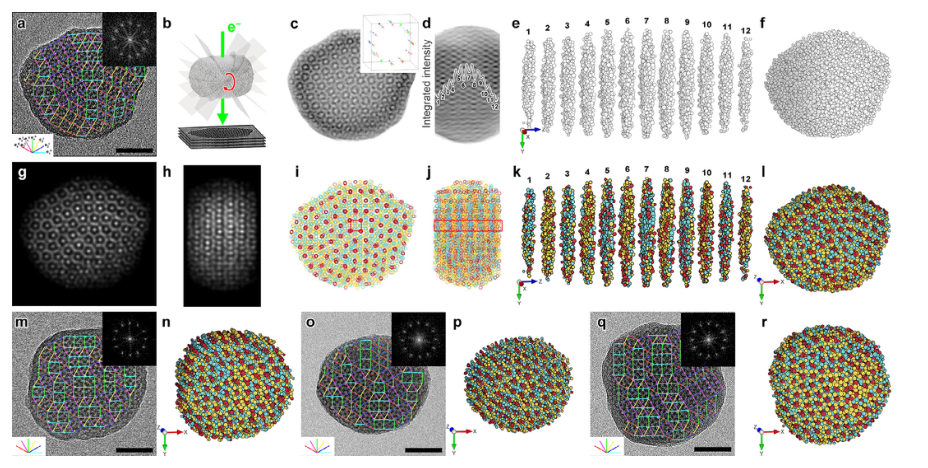
<figcaption class="paper-figure-caption"><b>Fig 1.</b> Figure 1. 3D determination of node coordinates in mesostructural dodecagonal quasicrystal particles. (a) 2D TEM image of a representative particle (QC-1), overlaid with 2D square- triangle tiling pattern; the inset shows the corresponding FFT with 12-fold rotational symmetry. (b) Schematic drawing of the data acquisition using tilt-series TEM images for 3D tomographic reconstruction. (c) Reconstructed 3D tomogram projected along the 12-fold axis (z-axis) along with its 3D FFT (inset), exhibiting 12-fold symmetry. Observed peaks in the FFT are colored according to whether can be indexed as hkml1&quot; , hkml0 and hkml1, with h, k, m, and l representing the four Miller indices along the...</figcaption>
</figure>
<figure class="paper-figure-card">
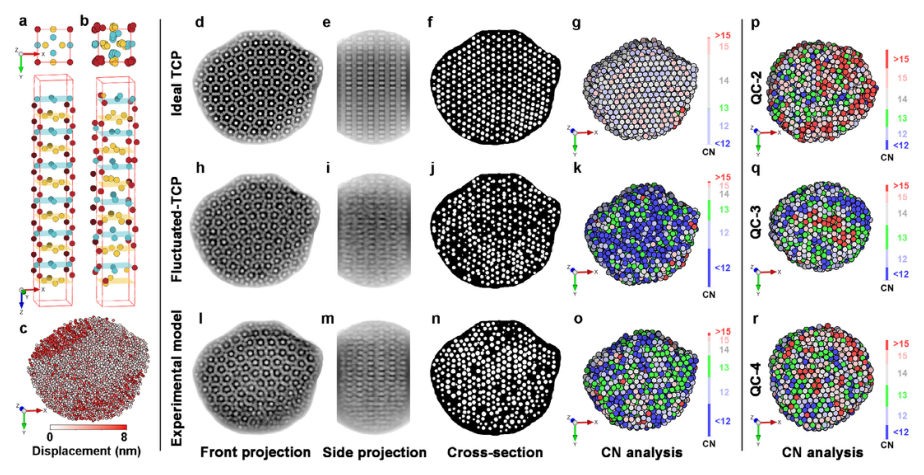
<figcaption class="paper-figure-caption"><b>Fig 2.</b> Figure 2. Structural analysis based on the TCP model. (a) A square-vertex unit of the ideal TCP structure, which is highly ordered with periodicity along the z-axis. (b) A columnar section extracted from the center of the particle (indicated by the red box in Figure 1i and 1j). The 12 colored planes correspond to the position of 12 slices shown in Figure 1d. The experimental nodal sites deviate from the ideal model. (c) Fluctuation assessment of the experimental nodal positions from the ideal TCP sites, red color indicates large fluctuation. (d,e) Front and side projections of the volumetric models of the ideal TCP. (f) Cross-section at z = ½ of the ideal TCP model (stack 109 of 200 along...</figcaption>
</figure>
<figure class="paper-figure-card">
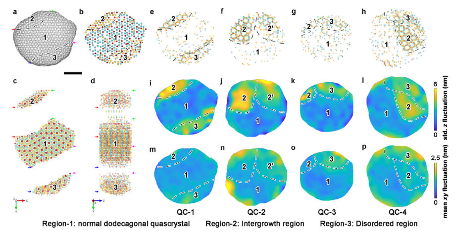
<figcaption class="paper-figure-caption"><b>Fig 3.</b> Figure 3. 3D analysis of defects and local disorder. (a) A cross-section of QC-1 taken at the middle position (slice 6). (b) Extracted nodes within the slice, showing that the slice structure can be partitioned into three distinct domains. Region-1 is the normal dodecagonal quasicrystal structure; Region-2 is the intergrowth region; and Region-3 is area with disordered structural arrangements. (c) Front projection of all extracted nodal positions of QC- 1, separated into three domains. (d) side projection of the corresponding domains, colored arrows indicating stacking fault (intergrowth defect). (e-h) Positions of the ‘outliers’ with positional displacement along the z-axis into...</figcaption>
</figure>
<figure class="paper-figure-card">
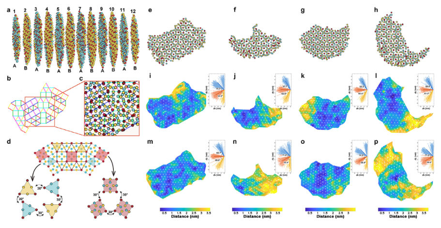
<figcaption class="paper-figure-caption"><b>Fig 4.</b> Figure 4. Tiling analysis and a simplified two-layer stacking model. (a) The merged 12 layers of QC-1. Odd-numbered layers (labelled layer A) consist mainly of Type I + Type III nodes, whereas even-numbered layers (layer B) are dominated by Type I + Type II nodes. (b) Dodecagonal ideal tiling of QC-1 with the intergrowth and disordered regions removed. (c) Enlarged view of the boxed region in (b), showing the nodal positions with actual tiling. (d) Schematic drawing of an ideal dodecagonal tiling. A hexagonal lattice can be obtained by rotating the basic tiling units by 30°, which creates adjacent layers. In the lower-left panel (triangular motif), the yellow background reveals a hexagonal...</figcaption>
</figure>
</div>

<p><strong>Summary.</strong> This work presents the first complete 3D structural determination of self-assembled mesostructural dodecagonal quasicrystals using advanced electron tomography. By analyzing nodal sites, the authors revealed that the structure deviates from simple theoretical models, quantifying defects and fluctuations. This advances understanding of soft-matter quasiperiodic order by providing detailed atomic-scale structural data.</p>
<p><strong>Why it may be interesting.</strong> While focused on materials science crystallography rather than fundamental quantum phenomena, the rigorous use of advanced tomography to resolve local structural details and quantify deviations from idealized periodic models (like TCP) shares methodological parallels with characterizing complex many-body ground states or defect structures in condensed matter theory.</p>
<details>
<summary>Detailed structure</summary>
<p><strong>Main problem.</strong> The primary challenge is achieving a precise, local three-dimensional (3D) structural determination of constituent atoms or secondary building units within complex self-assembled soft matter quasicrystalline systems.</p>
<p><strong>Main result.</strong> The study reports the first complete 3D structure of mesostructural dodecagonal quasicrystals, revealing that the actual arrangement deviates from ideal tetrahedral close packing and exhibits quantifiable defects and fluctuations.</p>
<p><strong>Method.</strong> Advanced electron tomography was employed to acquire tilt-series data, followed by custom structural tracing workflows to extract 3D coordinates of nodal sites across the entire particle volume.</p>
<p><strong>Model / system.</strong> The physical system is self-assembled mesostructural dodecagonal quasicrystalline particles formed from cationic surfactant and silica precursors. The analysis compares the experimental structure against idealized models, such as the Tetrahedrally Close-Packed (TCP) lattice.</p>
<p><strong>Key observables.</strong> 3D nodal coordinates, coordination numbers (CN), phason strain parameters ($\lambda$, $d$), and comparison of simulated vs. experimental TEM images.</p>
<p><strong>Important parameters / regimes.</strong> The periodicity along the stacking axis (e.g., 6.9 nm for QC-1) and the cutoff distance used for neighbor counting ($1.5 	imes$ mean nearest-neighbor distance).</p>
<p><strong>Assumptions / limitations.</strong> Initial reconstruction assumes a spherical geometry for each extracted node, although subsequent analysis incorporates positional fluctuations to refine this.</p>
<p><strong>Figures summary.</strong> Figures illustrate the entire process: 2D tiling patterns, 3D tomogram reconstructions showing 12-fold symmetry in FFT, and direct comparisons between simulated TEM images based on derived models (Ideal vs. Fluctuated) and experimental views.</p>
<p><strong>Paper structure.</strong> The paper progresses from identifying the structural challenge to detailing the advanced electron tomography data acquisition and reconstruction process. It then analyzes the extracted 3D nodal positions by classifying node types, quantifying deviations from ideal lattices using displacement analysis, and finally proposing a simplified two-layer stacking model that best fits the observed disorder.</p>
</details>
<details>
<summary>Abstract</summary>
<p>Quasicrystals have revolutionized our understanding of order in solids by demonstrating exotic structural and physicochemical properties with diverse potential applications. Despite the development of various theoretical models and experimental techniques to describe quasicrystal structures, the precise determination of local three dimensional (3D) arrangements of constituent atoms, or of secondary building units such as clusters or micelles, remains elusive. This challenge is particularly acute in self assembled soft matter quasicrystalline systems, where the complex assembly of molecular groups introduces additional defects and structural modulations. Herein, we report the first complete structural determination of self-assembled mesostructural dodecagonal quasicrystalline particles. Employing advanced electron tomography, combined with dedicated structural tracing and processing workflows, the 3D coordinates of all nodal sites were extracted. This approach reveals that the actual structure deviates from the conventionally assumed tetrahedral close packing geometry, exhibiting diverse coordination environments and displacive fluctuations. We identified and quantified rotational intergrowths arising from node exchange, as well as various defects and disorder, with these features discernible only through 3D analysis. Additionally, we propose a simplified two-layer stacking of isomorphic hexagonal model to form dodecagonal quasicrystal. This work advances our understanding of soft-matter dodecagonal quasicrystals and paves the way for detailed structural elucidation of self-assembled systems.</p>
</details>
<p><sub><a href="#top">↑ back to top</a></sub></p>

<p><a id="paper-2608.02426"></a></p>
<h3 id="screening-phonon-mediated-superconductors-from-static-orbital-hamiltonians"><a href="http://arxiv.org/abs/2608.02426v1">Screening phonon-mediated superconductors from static orbital Hamiltonians</a></h3>
<p><strong>Authors:</strong> Jian-Feng Zhang, Ze-Feng Gao, Xiao-Qi Han, Dingshun Lv, Miao Gao, Kai Liu, Xinguo Ren, Zhong-Yi Lu, Tao Xiang<br>
<strong>Type:</strong> theory · <strong>Category:</strong> other · <strong>PDF:</strong> <a href="https://arxiv.org/pdf/2608.02426v1">https://arxiv.org/pdf/2608.02426v1</a><br>
<strong>Analysis basis:</strong> full PDF text, analyzed in chunks
<strong>Topic relevance:</strong> <code>Keldysh / 2PI / non-Gaussian methods</code> <strong>1/5</strong> · <code>analog quantum simulation</code> <strong>1/5</strong> · <code>methods for driven-dissipative</code> <strong>1/5</strong></p>
<div class="figure-strip-hint">↔ Scroll figures horizontally</div>
<div class="paper-figures-scroll">
<figure class="paper-figure-card">
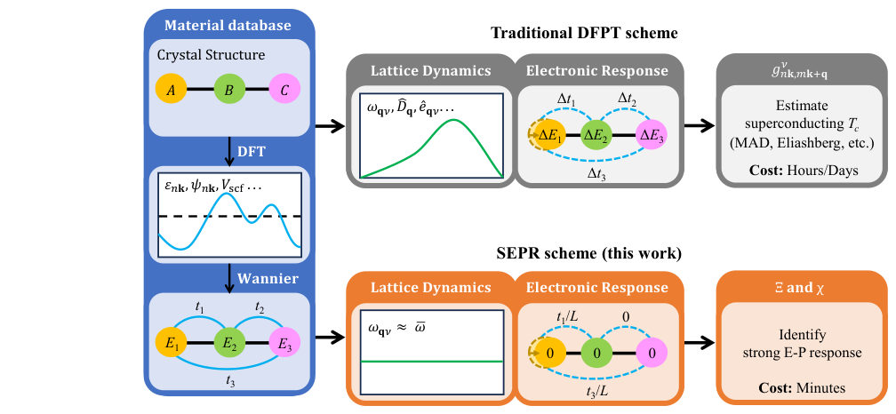
<figcaption class="paper-figure-caption"><b>Fig 1.</b> FIG. 1. Schematic illustration of the static electron-phonon response (SEPR) scheme framework. The gray panel shows the conventional DFPT-based workflow. The orange panel summarizes the present SEPR workflow, which consists of three successive approximations: (i) the dynamic isotropic approximation, which replaces mode-dependent phonon frequencies by an average characteristic frequency ¯ω; (ii) the double-center approximation, which retains the hopping variations associated with bonds connected to the displaced atom; and (iii) the bonding attractivity (BA) model approximation, which estimates the hopping derivatives from the static Hamiltonian through a bond-length dependence. The resulting...</figcaption>
</figure>
<figure class="paper-figure-card">
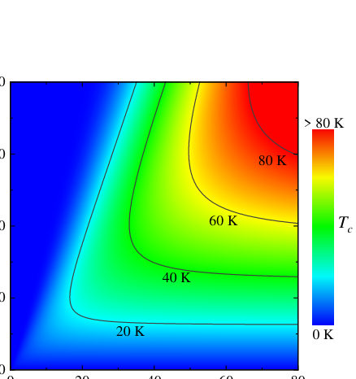
<figcaption class="paper-figure-caption"><b>Fig 2.</b> FIG. 2. Contour map of the superconducting transition tem- perature Tc in the Ξ−¯ω plane, evaluated from the McMillan- Allen-Dynes formula. Within dynamic isotropic approxima- tion, we have ωlog = ¯ω and λ = Ξ2/ℏ2¯ω2. µ∗was empirically set as 0.1.</figcaption>
</figure>
<figure class="paper-figure-card">
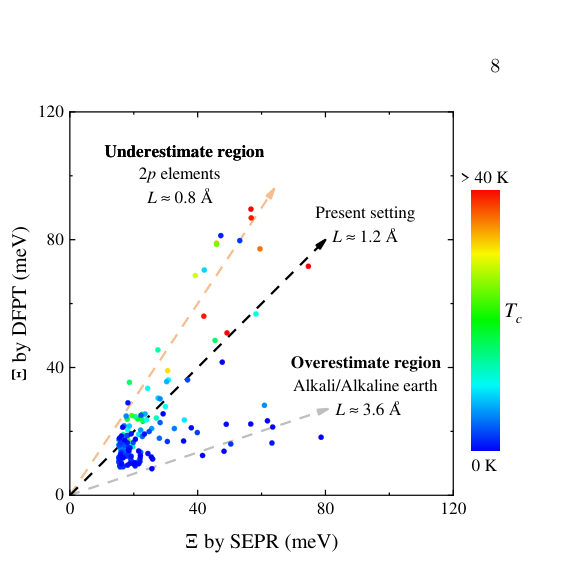
<figcaption class="paper-figure-caption"><b>Fig 3.</b> FIG. 4. Comparison of the screening parameter Ξ obtained from the SEPR scheme and from DFPT for the 150 dynam- ically stable screened compounds. The horizontal axis shows Ξ from SEPR, and the vertical axis shows Ξ from DFPT. The dashed diagonal line corresponds to ΞSEPR = ΞDFPT. Symbol colors indicate the superconducting Tc (exp. or cal.).</figcaption>
</figure>
<figure class="paper-figure-card">
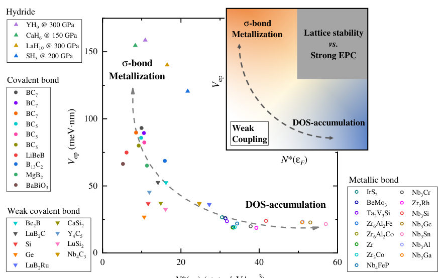
<figcaption class="paper-figure-caption"><b>Fig 4.</b> FIG. 5. Distribution of the 34 screened dynamically stable superconducting candidates with calculated Tc &gt; 10 K, together with several representative high-pressure hydrides, in the Vep −N ∗(εF ) plane. The horizontal axis is the active density of states per unit volume, N ∗(εF ), and the vertical axis is the average electron-phonon scattering measure, Vep. Different symbols denote different material classes, including high-pressure hydrides, strong-covalent systems, weak-covalent systems, and metallic bond systems. The inset schematically divides the plane into the σ-bond metallization regime, the DOS-accumulation regime, the weak-coupling region, and the region associated with the...</figcaption>
</figure>
</div>

<p><strong>Summary.</strong> This paper introduces a novel, low-cost computational framework called SEPR to screen for phonon-mediated superconductors by estimating electron-phonon coupling directly from static orbital Hamiltonians. By bypassing expensive explicit phonon calculations, the authors screened over 36,000 compounds and identified 34 promising candidates with $T_c > 10$ K. The work reveals that high-$T_c$ superconductivity arises primarily through two distinct mechanisms: strong covalent $\sigma$-bonding or high density of states accumulation near the Fermi level.</p>
<p><strong>Why it may be interesting.</strong> While focused on condensed matter superconductivity rather than quantum information, the development of an efficient, physically transparent theoretical framework (SEPR) to bypass computationally prohibitive steps in many-body calculations is methodologically relevant to complex quantum simulations.</p>
<details>
<summary>Detailed structure</summary>
<p><strong>Main problem.</strong> The high computational cost of first-principles calculations for electron-phonon coupling (EPC) severely limits large-scale screening of potential superconducting materials.</p>
<p><strong>Main result.</strong> The authors developed a low-cost framework identifying 34 dynamically stable superconducting candidates with calculated Tc &gt; 10 K, revealing two distinct microscopic routes to high-Tc superconductivity.</p>
<p><strong>Method.</strong> They propose the Static Electron-Phonon Response (SEPR) scheme, which estimates EPC tendency directly from static orbital-based Hamiltonians, bypassing explicit phonon perturbation calculations during screening.</p>
<p><strong>Model / system.</strong> The study focuses on phonon-mediated superconductors analyzed using an orbital-based tight-binding Hamiltonian. The framework uses approximations like the Dynamic Isotropic Approximation and Bonding Attractivity (BA) model to derive screening parameters $\Xi$ and $\chi$.</p>
<p><strong>Key observables.</strong> Superconducting critical temperature ($T_c$), EPC scattering scale ($\lambda$, $V_{ep}$), and intrinsic deformation response ($\chi$).</p>
<p><strong>Important parameters / regimes.</strong> The two key regimes identified are the metallized covalent $\sigma$-bond route (high $V_{ep}$) and the Fermi-level density-of-states accumulation route (high $N^*(\epsilon_F)$).</p>
<p><strong>Assumptions / limitations.</strong> The SEPR framework is an estimation of electronic tendency, not a replacement for full DFPT calculation; it relies on several approximations to achieve computational efficiency.</p>
<p><strong>Figures summary.</strong> Figure 1 compares the conventional costly DFPT workflow with the efficient SEPR workflow. Figure 5 maps the identified candidates in a $V_{ep} - N^*(\epsilon_F)$ plane, showing clustering into two distinct high-$T_c$ regimes.</p>
<p><strong>Paper structure.</strong> The paper first identifies the computational bottleneck of EPC calculations. It then introduces and details the SEPR scheme using three approximations to calculate screening parameters ($\Xi$, $\chi$). Finally, it applies this method to a large database, identifying candidates and classifying them based on their underlying microscopic mechanism for high-$T_c$.</p>
</details>
<details>
<summary>Abstract</summary>
<p>The first-principles search for superconductors is severely limited by the high cost of electron-phonon coupling (EPC) calculations. Here we develop a low-cost, physically transparent framework that identifies strong-EPC materials directly from static orbital-based Hamiltonians without explicit phonon perturbation calculations. Verification using density functional perturbation theory (DFPT) for representative superconductors shows that the framework captures semi-quantitatively the EPC scale at substantially lower computational cost. Applied to more than 36,000 compounds in the MattKeyBond database, it identifies 34 dynamically stable superconducting candidates with calculated $T_c > 10$ K after DFPT verification. These candidates reveal two distinct routes to relatively high-$T_c$ superconductivity: a metallized covalent $σ$-bond route that is more favorable for achieving high-$T_c$ superconductors, and a Fermi-level density-of-states accumulation route that can enhance $T_c$ but usually to a more limited extent.</p>
</details>
<p><sub><a href="#top">↑ back to top</a></sub></p>

<p><a id="paper-2608.02501"></a></p>
<h3 id="superconducting-dome-due-to-the-fano-feshbach-shape-resonance-in-artificial-high-tc-superlattices"><a href="http://arxiv.org/abs/2608.02501v1">Superconducting dome due to the Fano-Feshbach shape resonance in artificial high-Tc superlattices</a></h3>
<p><strong>Authors:</strong> Gaetano Campi, Andrea Alimenti, Danielle Villa, G. Alexander Smith, Fedor F. Balakirev, Luis Balicas, Andrea Perali, Sergio Caprara, Gennady Logvenov, Antonio Bianconi1<br>
<strong>Type:</strong> experiment · <strong>Category:</strong> strongly correlated electrons · <strong>PDF:</strong> <a href="https://arxiv.org/pdf/2608.02501v1">https://arxiv.org/pdf/2608.02501v1</a><br>
<strong>Analysis basis:</strong> full PDF text, analyzed in chunks
<strong>Topic relevance:</strong> <code>Keldysh / 2PI / non-Gaussian methods</code> <strong>1/5</strong> · <code>Kondo &amp; dissipative impurity</code> <strong>1/5</strong> · <code>analog quantum simulation</code> <strong>1/5</strong></p>
<div class="figure-strip-hint">↔ Scroll figures horizontally</div>
<div class="paper-figures-scroll">
<figure class="paper-figure-card">
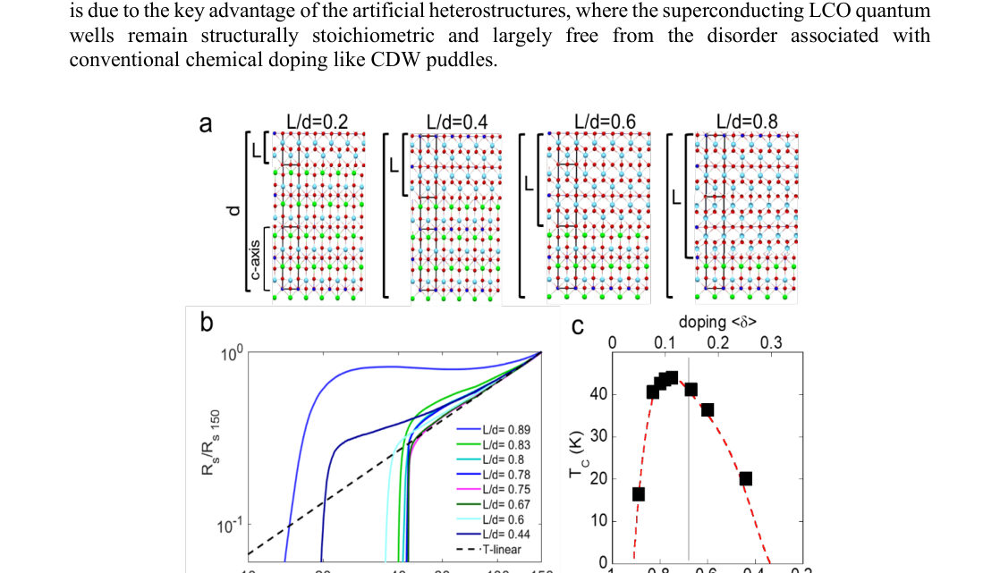
<figcaption class="paper-figure-caption"><b>Fig 1.</b> Figure 1. (a) Crystal structure of an AHTS superconductor composed of a 3D superlattice of quantum wells made of stoichiometric LCO units of thickness L, intercalated by chemically doped normal metal units LSCO of thickness W with period d = L + W. Conformational parameter L/d yields the optimum critical temperature in the range 0.6 &lt; L/d &lt; 0.7, (b) Normalized sheet resistance as a function of temperature for LSCO/LCO superlattices with different L/d ratios measured in this work. The dashed line represents the T-linear resistivity expected for the Planckian regime in the range 0 &lt; T &lt; 150 K. (c) Superconducting dome, TC as a function of L/d, for the AHTS superlattices measured in this work.</figcaption>
</figure>
<figure class="paper-figure-card">
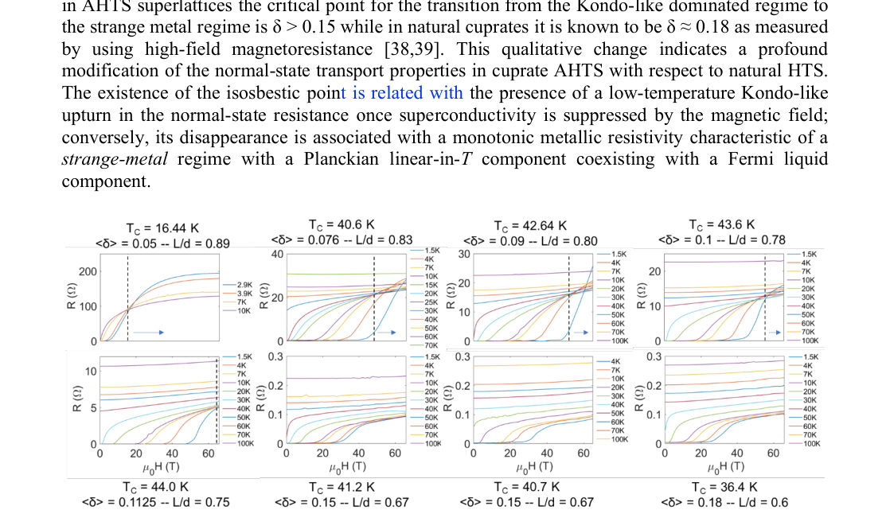
<figcaption class="paper-figure-caption"><b>Fig 2.</b> Figure 2. Resistance R(Ω) as a function of the temperature in eight samples with different TC and L/d (&lt;δ&gt;) values (indicated at the top of the upper panels), measured under magnetic field μ0H up to 72 T at the NHMFL-LANL facility. To expose this crossover, we extracted the temperature dependence of the resistance, R(T), collected at fixed magnetic fields by taking vertical cuts of the R(H) data, see Fig. 3. These curves provide a direct view of the evolution of the normal-state transport as a function of both field and doping. For samples exhibiting the isosbestic point in R(H), the corresponding R(H) curves display a clear upturn at low temperatures once superconductivity is suppressed by...</figcaption>
</figure>
<figure class="paper-figure-card">
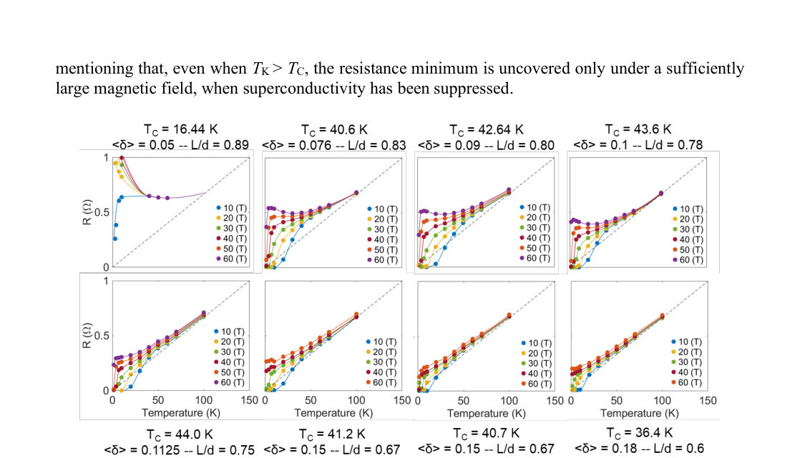
<figcaption class="paper-figure-caption"><b>Fig 3.</b> Figure 3. Resistance as a function of temperature under the indicated magnetic fields for the eight samples studied here. Values of d are indicated at the top of the upper panels and bottom of lower panels. We observe the low-temperature upturn in resistance characteristic of the pseudogap phase with a Kondo-like component coexisting with Planckian dissipation, dominant at δ=0.15 The systematic disappearance of both the low-temperature upturn in R(T) and the crossing point in R(H) upon increasing doping indicates that this additional scattering channel weakens progressively. Near optimal doping, the transport is instead dominated by a robust linear-in-temperature resistivity, characteristic...</figcaption>
</figure>
<figure class="paper-figure-card">
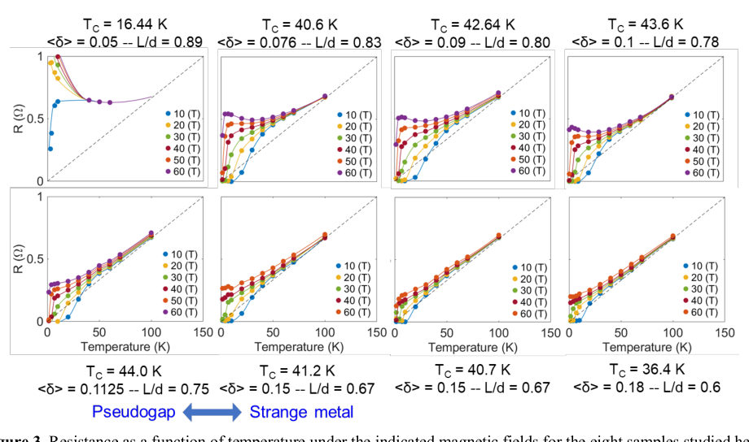
<figcaption class="paper-figure-caption"><b>Fig 4.</b> Figure 4 (a) Normal state resistance (open circles) normalized by the value of the resistance at T = 150 K or R(150K) as a function of T under µ0H = 60 T for the eight samples studied here, alongside the modelled curves (continuous lines) via Eq. 1. Different values of L/d are indicated by different colors. (b) Tk and R0k+r0 parameters extracted through the fitting procedure. We can distinguish the strong Kondo-like regime, where TK &gt; TC, and the weak Kondo-like regime with TK &lt; TC. Upon further increasing doping, a crossover to strange metallic state is observed, where a Fermi- liquid-like behaviour emerges at low temperatures, characterized by both a quadratic temperature dependence of...</figcaption>
</figure>
<figure class="paper-figure-card">
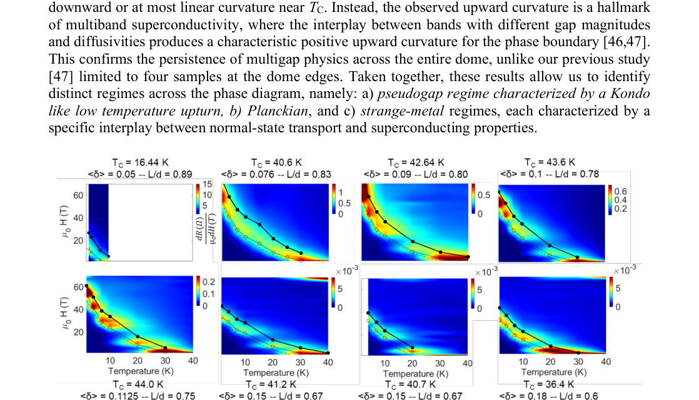
<figcaption class="paper-figure-caption"><b>Fig 5.</b> Figure 5. Color contour plots of dR/μ0d(H) as a function of μ0H and T, for the samples with different L/d ratios. Black dots alongside the thick black line represent the upper critical magnetic fields, namely, μ0H100. The dashed black lines are the irreversible magnetic fields μ0HCirr. Open circles represent the maximum of the derivative modeled by the Fano line shape.</figcaption>
</figure>
</div>

<p><strong>Summary.</strong> The research experimentally validates a theory predicting superconducting domes in artificial high-Tc superlattices by tuning the material structure's geometry. Using pulsed magnetotransport measurements, the authors map out how changing the lattice period tunes the system through different electronic regimes, confirming predictions related to Fano-Feshbach resonances and BEC-BCS crossover physics.</p>
<p><strong>Why it may be interesting.</strong> This work provides an experimental realization and validation of complex theoretical predictions (Fano resonance, BEC-BCS crossover) in engineered quantum materials, bridging concepts from strongly correlated physics to measurable transport properties.</p>
<details>
<summary>Detailed structure</summary>
<p><strong>Main problem.</strong> To experimentally validate the Bianconi Perali Valletta (BPV) theory predicting a superconducting dome based on quantum material design in Artificial High-Tc Superlattices (AHTS).</p>
<p><strong>Main result.</strong> The study confirms the theoretical prediction of a superconducting dome, showing that both $T_C$ and $\mu_0H_{C2}$ peak at specific geometrical ratios ($L/d \approx 0.75$), consistent with a BEC-to-BCS crossover driven by Fano-Feshbach resonance.</p>
<p><strong>Method.</strong> Systematic magneto-transport measurements were performed on AHTS across the full doping range using pulsed magnetic fields up to 72 T.</p>
<p><strong>Model / system.</strong> The system consists of Artificial High-Tc Superlattices (AHTS) formed by alternating superconducting doped Mott insulator layers ($ ext{LCO}$) and normal metal spacers ($    ext{LSCO}$). The structure's electronic properties are tuned by the geometrical factor $L/d$.</p>
<p><strong>Key observables.</strong> Resistive transitions, upper critical magnetic field ($\mu_0	ext{H}_{C2}(T)$), Ginzburg-Landau coherence length ($\xi_0$), and the superconducting dome shape.</p>
<p><strong>Important parameters / regimes.</strong> The geometrical factor $L/d$, which controls the effective hole concentration $\delta=0.45(1 - L/d)$; doping levels (underdoped to overdoped).</p>
<p><strong>Assumptions / limitations.</strong> The superconductivity is governed by a Fano-Feshbach shape resonance involving multigap pairing, as predicted by BPV theory.</p>
<p><strong>Figures summary.</strong> Figures illustrate the superconducting dome ($T_C$ vs. $L/d$) and the dependence of resistance on magnetic field ($\mu_0H$), highlighting doping-dependent transport features like Kondo-like upturns.</p>
<p><strong>Paper structure.</strong> The paper presents a systematic magneto-transport study, mapping out the evolution of superconducting parameters across varying doping levels by tuning the superlattice geometry ($L/d$).</p>
</details>
<details>
<summary>Abstract</summary>
<p>In this work we provide compelling experimental validation of the Bianconi Perali Valletta (BPV) theory predicting a superconducting dome based on a quantum material design of Artificial High TC Superlattices (AHTS) made with a selected nanoscale heterostructure geometry. These AHTS are SNSN superlattices of quantum wells of period d, composed of first units, superconducting doped Mott insulator layers with Rashba spin orbit coupling (S) of thickness L, intercalated by second units, normal metal spacers (N). In these superlattices, grown by molecular beam epitaxy (MBE), the experimental superconducting dome is obtained by material quantum design changing the chemical potential via the quantum geometrical factor L/d which tunes the Fano-Feshbach shape resonance in the pair transfer between superconducting gaps in the BCS regime and different gaps in the BEC-BCS crossover. Here we present a systematic magneto-transport study of AHTS artificial superlattices across the full doping range of the superconducting dome, from the deeply underdoped to the overdoped regime, using pulsed magnetic fields up to 72 T. By varying the L/d ratio, we tune the effective hole concentration delta=0.45(1-L/d) and map the evolution of the resistive transitions, the upper critical magnetic field and the Ginzburg-Landau coherence length</p>
</details>
<p><sub><a href="#top">↑ back to top</a></sub></p>

<p><a id="paper-2608.02152"></a></p>
<h3 id="time-reversal-symmetry-broken-quantum-spin-hall-effect-in-pseudospin-1-dirac-rashba-system"><a href="http://arxiv.org/abs/2608.02152v1">Time reversal symmetry broken quantum spin hall effect in pseudospin-1 Dirac-Rashba system</a></h3>
<p><strong>Authors:</strong> Puspita Parui, Bheema Lingam Chittari<br>
<strong>Type:</strong> theory · <strong>Category:</strong> other · <strong>PDF:</strong> <a href="https://arxiv.org/pdf/2608.02152v1">https://arxiv.org/pdf/2608.02152v1</a><br>
<strong>Analysis basis:</strong> full PDF text, analyzed in chunks
<strong>Topic relevance:</strong> <code>analog quantum simulation</code> <strong>1/5</strong> · <code>exotic spin models in light-matter</code> <strong>1/5</strong> · <code>spintronics-quantum-optics interface</code> <strong>1/5</strong></p>
<div class="figure-strip-hint">↔ Scroll figures horizontally</div>
<div class="paper-figures-scroll">
<figure class="paper-figure-card">
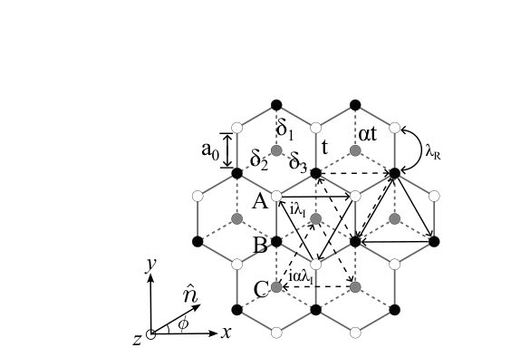
<figcaption class="paper-figure-caption"><b>Fig 1.</b> FIG. 1. Schematic of α −T3 lattice with sublattices A, B and C are denoted by white, black and grey circles, respectively. The model contains nearest-neighbour hopping t (solid lines) and αt (dashe lines); next-nearest-neighbour intrinsic SOC λI and αλI (solid and dashed arrows, respectively); spin-mixing Rashba spin-orbit coupling λR (curved arrow). Magnetization orientation in real space is specified by ˆn.</figcaption>
</figure>
<figure class="paper-figure-card">
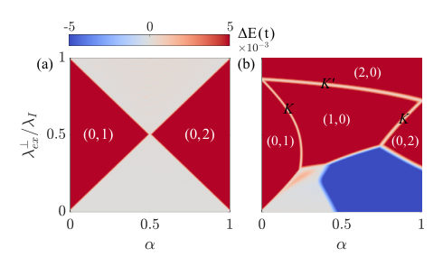
<figcaption class="paper-figure-caption"><b>Fig 2.</b> FIG. 2. Phase diagram of the global bulk gap as a function of α and exchange coupling λ⊥ ex for out-of-plane magnetization for (a) λR = 0 and (a) λR = 0.05. The Chern numbers (C, Cσ) are used to index the TI phases. A negative bandgap indicates transition to a metallic phase due to the indirect band gap closing as the band gaps at different k values overlap.</figcaption>
</figure>
<figure class="paper-figure-card">

<figcaption class="paper-figure-caption"><b>Fig 3.</b> Fig.2(a) and Fig.2(b) show the numerically calculated bulk band gap phase diagram as a function of out-of- plane exchange field λ⊥ ex and the lattice parameter α, in the absence and presence of Rashba SOC, respectively. The grey region denotes a direct band-gap closing, whereas the blue region indicates closing of the indirect bandgap, both representing a metallic phase. The insulating phases are indexed by the pair (C, Cs), where C is the total Chern number and Cs is the projected spin Chern number of the occupied subspace. While the total Chern number (C) identifies the QAH topology, the QSH phase is characterised by the projected spin Chern number (Cs), as the exchange field explicitly...</figcaption>
</figure>
<figure class="paper-figure-card">
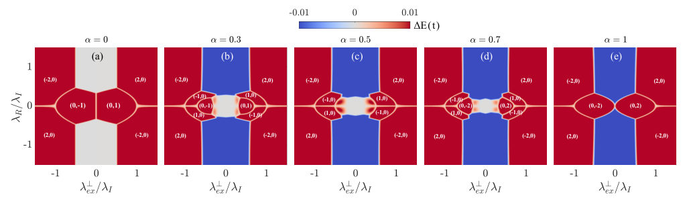
<figcaption class="paper-figure-caption"><b>Fig 4.</b> FIG. 3. Phase diagram of bulk band gap in the λR/λI - λ⊥ ex/λI plane, for different values of α. (C, Cσ) indicates the total and projected spin Chern number of the occupied subspace for different topological phases. The zero band-gap lines indicate a phase transition, whereas the blue region suggests an indirect band-gap closure.</figcaption>
</figure>
<figure class="paper-figure-card">
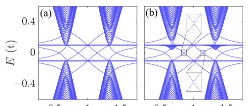
<figcaption class="paper-figure-caption"><b>Fig 5.</b> FIG. 4. Electronic spectrum of zig-zag edged α−τ3 ribbon for α = 1. The parameters are chosen to be λI = 0.2, λ⊥ ex = 0.1 and λR = 0 (a) and λR = 0.02 (b). The inset shows gapped edge bands in the presence of Rashba coupling. The width of the ribbon considered is 30nm, containing 141 zigzag chains along the width.</figcaption>
</figure>
</div>

<p><strong>Summary.</strong> This paper theoretically explores the complex interplay between time-reversal symmetry breaking, Rashba spin-orbit coupling, and magnetism in a pseudospin-1 fermionic system. It demonstrates that the QSH phase persists under broken TRS but transitions into distinct QAH phases. Crucially, it also shows how applying an in-plane magnetic field can induce tunable Second-Order Topological Insulator (SOTI) phases hosting localized corner states.</p>
<p><strong>Why it may be interesting.</strong> This work provides a detailed theoretical playground for understanding how multiple topological orders (QSH, QAH, SOTI) can coexist and transition within a single, tunable lattice structure using external magnetic fields and SOC.</p>
<details>
<summary>Detailed structure</summary>
<p><strong>Main problem.</strong> The study investigates how the Quantum Spin Hall (QSH) phase survives, transitions, or changes character when Time-Reversal Symmetry (TRS) is broken by a ferromagnetic exchange field and spin mixing occurs via Rashba SOC.</p>
<p><strong>Main result.</strong> The system exhibits multiple topological phases, including QSH and distinct Quantum Anomalous Hall (QAH) phases. Furthermore, in-plane magnetization can induce Second-Order Topological Insulator (SOTI) phases with tunable corner states.</p>
<p><strong>Method.</strong> Theoretical analysis using tight-binding models on the pseudospin-1 $\alpha$-T3 lattice, calculating topological invariants like the spin-Chern number and total Chern number via momentum-space Hamiltonian diagonalization.</p>
<p><strong>Model / system.</strong> The system is a pseudospin-1 fermionic model on an $\alpha$-T3 lattice, incorporating Kane-Mele hopping, Rashba SOC ($\lambda_R$), and ferromagnetic exchange coupling ($\lambda_{ex}$). The Hamiltonian is analyzed in spin-up/spin-down sectors.</p>
<p><strong>Key observables.</strong> Spin-Chern number ($C_\sigma$), total Chern number ($C$), bulk band gaps ($\Delta E$), and localized zero-energy corner states (SOTI).</p>
<p><strong>Important parameters / regimes.</strong> Lattice parameter $\alpha$, Rashba coupling strength ($\lambda_R$), and exchange field strengths ($\lambda_{\perp	ext{ex}}, \lambda_{\parallel	ext{ex}}$).</p>
<p><strong>Assumptions / limitations.</strong> The analysis relies on projecting the Hamiltonian onto occupied subspaces to define topological invariants when symmetries are broken.</p>
<p><strong>Figures summary.</strong> Figures illustrate band structures (e.g., zigzag nanoribbons) showing gap closing/reopening at critical parameter values ($\alpha = \lambda_{	ext{ex}}$), and real-space spectra confirming tunable zero-energy corner modes in SOTI phases.</p>
<p><strong>Paper structure.</strong> The paper systematically analyzes the Hamiltonian's response to broken TRS, first establishing QSH protection, then showing how Rashba SOC drives transitions into specific QAH states, and finally exploring the realization of SOTI phases via in-plane magnetization.</p>
</details>
<details>
<summary>Abstract</summary>
<p>The Quantum spin Hall (QSH) phase is conventionally understood to be protected by time-reversal symmetry (TRS). Here, we theoretically investigated the fate of the QSH phase in a pseudospin-1 fermionic $α-\mathcal{T}_3$ system in the presence of a TRS-breaking ferromagnetic exchange field and spin-nonconserving Rashba spin-orbit coupling. Despite broken TRS, the QSH phase survives over a finite parameter regime and is characterised by a non-zero projected spin-Chern number $C_σ(σ= \uparrow, \downarrow)$, protected by a spin-spectral gap. In the absence of Rashba coupling, the QSH phase remains robust up to an $α$-dependent critical exchange field. Rashba SOC qualitatively reshapes the phase diagram by driving transitions into two distinct quantum anomalous Hall (QAH) phases: a $C=2$ phase, irrespective of $α$-values, and a $C=1$ phase for $α\neq 0,1$, which is further identified as a valley-polarized QAH phase arising from a single valley. Rotating the magnetization to in-plane gaps out the first-order helical edge states and gives rise to second-order topological insulator (SOTI) phases that host localized corner states in suitable finite geometry. We further identify a topological phase transition between two different SOTI phases, mediated by nanoribbon edge states at an exchange field equal to $α$. These results establish spin-resolved topology in a higher pseudospin system as well as the $α-\mathcal{T}_3$ lattice as a versatile platform for engineering and controlling multiple topological phases through magnetic exchange and spin-orbit coupling.</p>
</details>
<p><sub><a href="#top">↑ back to top</a></sub></p>

<p><a id="paper-2608.02394"></a></p>
<h3 id="emergence-of-double-dome-superconductivity-in-the-pressurized-dirac-semimetal-bamg2bi2"><a href="http://arxiv.org/abs/2608.02394v1">Emergence of Double-Dome Superconductivity in the Pressurized Dirac Semimetal BaMg2Bi2</a></h3>
<p><strong>Authors:</strong> Qi Wang, Juefei Wu, Cuiying Pei, Yi Zhao, Yiyan Wang, Yanpeng Qi<br>
<strong>Type:</strong> both · <strong>Category:</strong> other · <strong>PDF:</strong> <a href="https://arxiv.org/pdf/2608.02394v1">https://arxiv.org/pdf/2608.02394v1</a><br>
<strong>Analysis basis:</strong> full PDF text, analyzed in chunks
<strong>Topic relevance:</strong> <code>analog quantum simulation</code> <strong>1/5</strong> · <code>driven-dissipative phase transition</code> <strong>1/5</strong></p>
<div class="figure-strip-hint">↔ Scroll figures horizontally</div>
<div class="paper-figures-scroll">
<figure class="paper-figure-card">
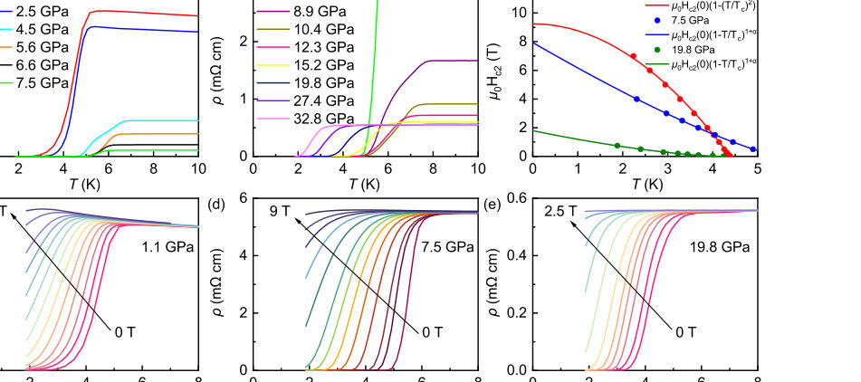
<figcaption class="paper-figure-caption"><b>Fig 1.</b> FIG. 1. (a) and (b) Temperature dependence of resistivity ρ(T ) at various pressures in the temperature range from 1.8 to 10 K for BaMg2Bi2 single crystal. (c)-(e) Temperature dependence of ρ(T ) under different magnetic fields at 1.1, 7.5, and 19.8 GPa, respectively. (f) The upper critical field µ0Hc2(T ) as a function of temperature at representative pressures. The solid lines demonstrate the fitting results using µ0Hc2(T ) = µ0Hc2(0)(1 −( T</figcaption>
</figure>
<figure class="paper-figure-card">
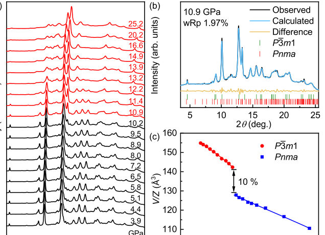
<figcaption class="paper-figure-caption"><b>Fig 2.</b> FIG. 2. (a) High-pressure XRD patterns of BaMg2Bi2 single crystal in the pressure range of 3.9 - 25.2 GPa at room temperature. (b) Rietveld refinement of XRD at 10.9 GPa. (c) The volume per formula V/Z as a function of pressure. The solid lines represent the third-order Birch-Murnaghan fitting.</figcaption>
</figure>
<figure class="paper-figure-card">
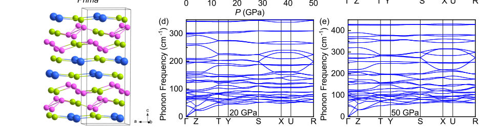
<figcaption class="paper-figure-caption"><b>Fig 3.</b> FIG. 3. (a) The crystal structure of P¯3m1 and Pnma phase in BaMg2Bi2. (b) The enthalpy difference relative to the P¯3m1 phase of BaMg2Bi2 under high pressure. (c)-(e) The phonon spectra of the predicted phase Pnma under different pressures.</figcaption>
</figure>
<figure class="paper-figure-card">

<figcaption class="paper-figure-caption"><b>Fig 4.</b> FIG. 4. (a-c) The Hall resistivity ρH(B) as a function of magnetic field within the pressure up to 32.8 GPa at 10 K. (d) Pressure dependence of Hall coefficient RH.</figcaption>
</figure>
<figure class="paper-figure-card">
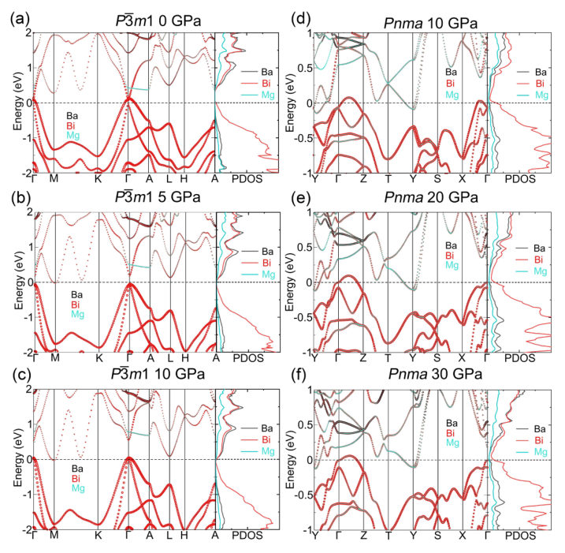
<figcaption class="paper-figure-caption"><b>Fig 5.</b> FIG. 5. The band structures and partial density of states (PDOS) of the P¯3m1 phase from 0 to 10 GPa (a)-(c) and the predicted structure Pnma from 10 to 30 GPa (d)-(f).</figcaption>
</figure>
</div>

<p><strong>Summary.</strong> This work reports on high-pressure studies of the Dirac semimetal BaMg2Bi2, revealing a unique double-dome superconducting behavior. The enhancement of superconductivity is directly correlated with two distinct physical events: a pressure-induced Lifshitz transition and a structural phase change from P3m1 to Pnma. This highlights how external tuning can drive complex interplay between electronic structure and macroscopic quantum phenomena.</p>
<p><strong>Why it may be interesting.</strong> While focused on condensed matter superconductivity, the interplay between external tuning parameters (pressure) driving both electronic topology changes (Lifshitz transition) and lattice structure changes is a general theme relevant to quantum phase transitions in strongly correlated or topological systems.</p>
<details>
<summary>Detailed structure</summary>
<p><strong>Main problem.</strong> The study investigates how high pressure affects the superconducting properties and structural stability of the topological Dirac semimetal BaMg2Bi2.</p>
<p><strong>Main result.</strong> A double-dome superconducting behavior is revealed, with distinct enhancements in Tc linked to a Lifshitz transition and a structural phase transition from P3m1 to Pnma.</p>
<p><strong>Method.</strong> The research combines high-pressure X-ray diffraction (XRD), electrical transport measurements (resistivity/Hall resistivity), and first-principles theoretical calculations (DFT).</p>
<p><strong>Model / system.</strong> The physical system is the topological material BaMg2Bi2, studied under extreme pressures using a Diamond Anvil Cell. The analysis tracks changes in crystal structure, electronic band topology, and superconducting critical temperatures.</p>
<p><strong>Key observables.</strong> Double-dome superconducting transition temperature (Tc), upper critical field (Hc2(T)), structural phase transitions ($    ext{P}ar{3}m1  o   ext{Pnma}$), and changes in Fermi surface topology.</p>
<p><strong>Important parameters / regimes.</strong> Applied pressure (up to 25.2 GPa); superconducting transition temperatures (e.g., 6.67 K, 7.22 K).</p>
<p><strong>Assumptions / limitations.</strong> Cell preparations were performed in an argon atmosphere due to the air-sensitive nature of the material.</p>
<p><strong>Figures summary.</strong> Figures show $
ho(T)$ and $H_{c2}(T)$ vs pressure (Fig. 1), high-pressure XRD patterns confirming structural changes (Fig. 2), and electronic structure calculations for both phases (Fig. 5, 6).</p>
<p><strong>Paper structure.</strong> The paper systematically presents measurements of superconducting properties under increasing pressure, correlating the observed double-dome behavior with simultaneous structural transitions identified via XRD and theoretical stability analysis.</p>
</details>
<details>
<summary>Abstract</summary>
<p>Dirac semimetal BaMg2Bi2 is reported to be a unique topological material that manifests surface superconductivity that coexistswith bulk band topology at ambient pressure. Here, we present a comprehensive investigation of high-pressure superconductingproperties in BaMg2Bi2 single crystal. Significantly, a pressure-driven double-dome superconducting behavior was revealed, withthe superconducting transition temperature Tc approaching the maximum values of 6.67 K at 4.5 GPa and 7.22 K at 10.4 GPafor the first and second superconducting domes, respectively. The combination of high-pressure X-ray diffraction, Hall resistivitymeasurements, and theoretical calculations demonstrates that, the first superconducting regime is closely related to the pressure-modulated Lifshitz transition, whereas the second superconducting phase emerges concurrently with a structural transition fromthe ambient-pressure P3m1 phase to a high-pressure Pnma phase.</p>
</details>
<p><sub><a href="#top">↑ back to top</a></sub></p>

<p><a id="paper-2608.00942"></a></p>
<h3 id="evidence-for-superconductivity-at-190-k-in-a-pressure-overdoped-cuprate"><a href="http://arxiv.org/abs/2608.00942v1">Evidence for superconductivity at 190 K in a pressure-overdoped cuprate</a></h3>
<p><strong>Authors:</strong> Alexander C. Mark, Huu T. Do, David Rodriguez, D. Gonzalez Arevalo, Adam Denchfield, Eduardo H. T. Poldi, Daniel P. Phelan, N. K. Man, Rssell J. Hemley<br>
<strong>Type:</strong> both · <strong>Category:</strong> strongly correlated electrons · <strong>PDF:</strong> <a href="https://arxiv.org/pdf/2608.00942v1">https://arxiv.org/pdf/2608.00942v1</a><br>
<strong>Analysis basis:</strong> full PDF text, analyzed in chunks
<strong>Topic relevance:</strong> <code>Keldysh / 2PI / non-Gaussian methods</code> <strong>1/5</strong> · <code>analog quantum simulation</code> <strong>1/5</strong></p>
<div class="figure-strip-hint">↔ Scroll figures horizontally</div>
<div class="paper-figures-scroll">
<figure class="paper-figure-card">
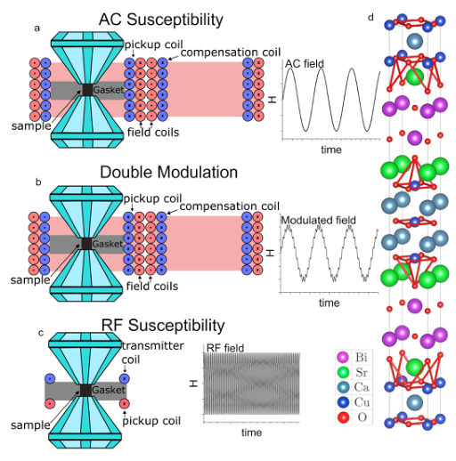
<figcaption class="paper-figure-caption"><b>Fig 1.</b> Fig. 1 DAC techniques used to measure signatures of su- perconductivity in Bi-2223 in this study. a) Setup for AC susceptibility measurements including a pickup and field coil around a diamond anvil. A matched reverse-wound compen- sation coil is placed next to the sensor to compensate for stray fields. · and x indicate coil is wound into or out of the page, respectively. Representative low frequency AC magnetic field waveform presented next to setup. b) Double modulation setup identical to the AC susceptibility setup, but utilizing a modulated AC field composed of a high amplitude low fre- quency modulation wave and a high frequency low amplitude excitation wave. c) RF susceptibility setup...</figcaption>
</figure>
<figure class="paper-figure-card">
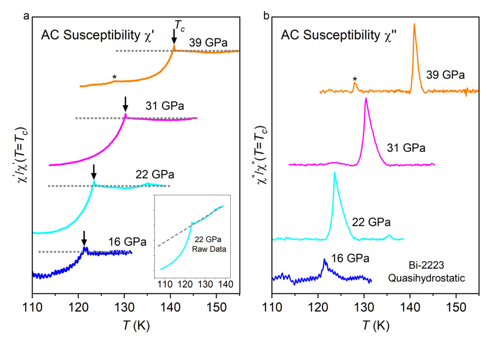
<figcaption class="paper-figure-caption"><b>Fig 2.</b> Fig. 2 a) χ′(T) for larger quasihydrostatic 20/80 Bi-2223/KCl samples. Inset: representative linear baseline subtraction near Tc. b) Corresponding χ′′(T). Data collected at a driving frequency of f = 98 Hz. Additional oscillations apparent in 16 GPa data due to low integration time used in demodulation. The background above Tc was approximately linear for all runs, and a linear background has been subtracted around Tc from all measurements to account for the diamagnetism of the pressure cells. Signals at 39 GPa (*) are attributed to pressure gradients developing across the sample, resulting in different regions having different Tc values [28]. Dotted lines are guides to the eye; signal...</figcaption>
</figure>
<figure class="paper-figure-card">
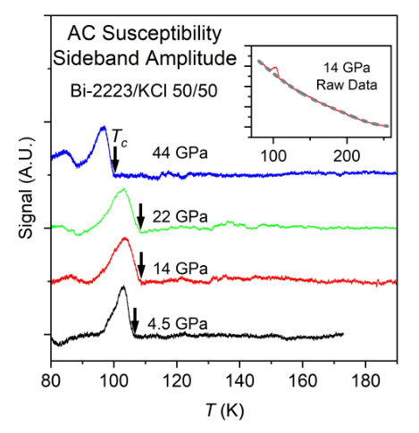
<figcaption class="paper-figure-caption"><b>Fig 3.</b> Fig. 3 Amplitudes of modulated signals from the less- quasihydrostatic 50/50 mixture of Bi-2223/KCl showing devi- ations from the linear background at Tc. Inset: representative background baseline (grey dashed line). Data offset for clar- ity.</figcaption>
</figure>
<figure class="paper-figure-card">
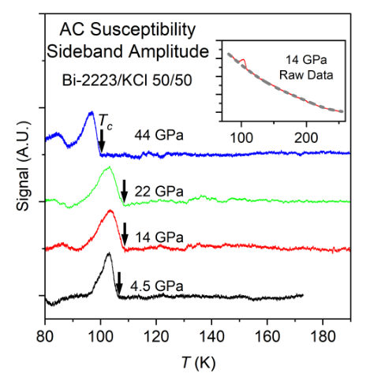
<figcaption class="paper-figure-caption"><b>Fig 4.</b> Figure 2 shows the results of measurements con- ducted on quasihydrostatic compression using lock-in techniques to probe χ′ and χ′′. χ′(T) signals show field expulsion at Tc due to the Meissner effect, in agreement with previous experiments at lower pressures in Ne [5]. At 39 GPa, the highest pressure where we directly mea- sured the AC susceptibility with these techniques [38], multiple features in both χ′ and χ′′ are apparent. We attribute these features to the development of stress gradients across the sample as the compression envi- ronment stiffens, resulting in multiple superconducting transitions at different points across the sample. In con- trast, comparable samples prepared in a...</figcaption>
</figure>
<figure class="paper-figure-card">
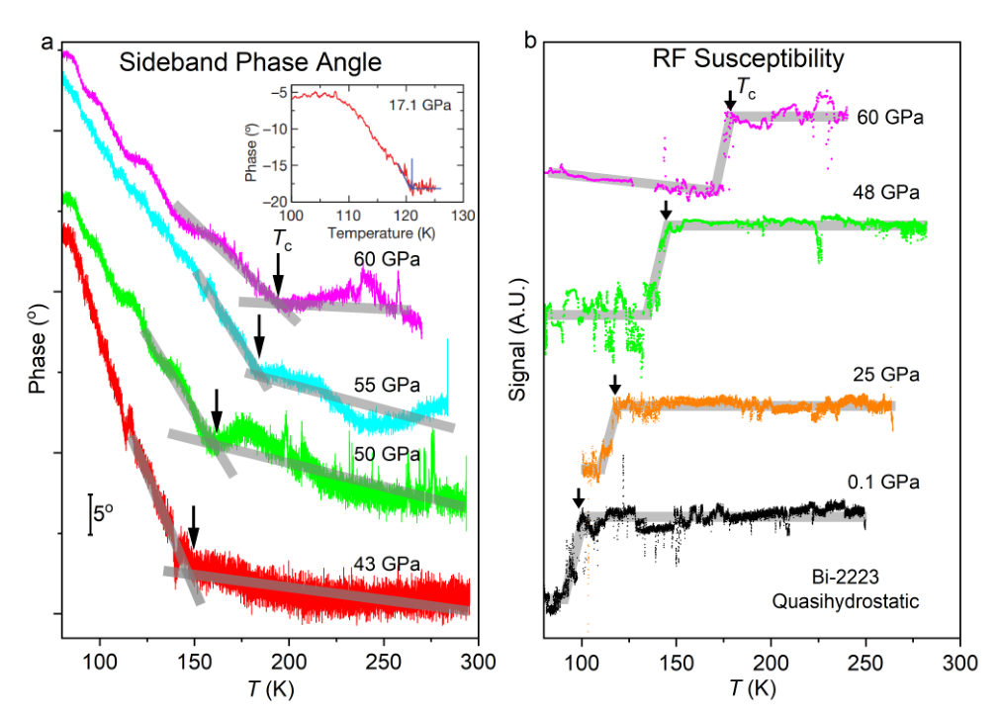
<figcaption class="paper-figure-caption"><b>Fig 5.</b> Fig. 4 a) Temperature dependence of the sideband phase angle of the quasihydrostatic 20/80 Bi-2223/KCl samples at various pressures. Data were collected using a driving frequency of 98 Hz and a modulation frequency of 2450 Hz. Arrows indicate assigned Tc values using the criteria of Chen et al. [5]. Oscillations in measurements are instrumental and due to overtones of the driving frequencies. Data offset for clarity. Inset: phase angle - temperature plot adapted from Chen et al. [5] indicating the Tc assignment criteria. b) Transmitted RF signals through a 20/80 Bi-2223/KCl mixture. Drops in the transmitted signal indicate diamagnetic transitions attributed to the onset of the Meissner...</figcaption>
</figure>
</div>

<p><strong>Summary.</strong> This study reports on measuring superconducting critical temperatures ($T_c$) in cuprates under extreme pressures up to 60 GPa. By combining advanced magnetic susceptibility measurements with DFT calculations, the authors demonstrate a continuous rise of $T_c$ to 190 K at high pressure. This suggests the existence of a 'second superconducting regime' driven by significant electronic restructuring at very high hole doping levels.</p>
<p><strong>Why it may be interesting.</strong> This work directly addresses unconventional superconductivity in strongly correlated materials, which is a major focus area. The use of high pressure as an external tuning parameter provides a unique way to map out the phase diagram and explore exotic electronic states relevant to many-body physics.</p>
<details>
<summary>Detailed structure</summary>
<p><strong>Main problem.</strong> The study investigates how applying high external pressure affects the superconducting critical temperature ($T_c$) in cuprate superconductors, specifically looking for evidence of a second superconducting regime at highly overdoped states.</p>
<p><strong>Main result.</strong> The research reports observing $T_c$ rising continuously to 190 K at 60 GPa, suggesting that high pressure induces electronic restructuring leading to enhanced superconductivity beyond previously known limits.</p>
<p><strong>Method.</strong> A combination of experimental techniques (AC susceptibility, double modulation, RF susceptibility) under high-pressure diamond anvil cells, complemented by DFT calculations to model doping changes, was employed.</p>
<p><strong>Model / system.</strong> The physical system is the cuprate superconductor $ ext{Pb}<em 1.6>{0.4}   ext{Bi}</em>}   ext{Sr<em 10_delta="10+\delta">2   ext{Ca}_2   ext{Cu}_3   ext{O}</em>$). The theoretical framework involves modeling how pressure modifies the hole doping concentration ($n_H$) and induces changes in the Fermi surface topology.}$ ($  ext{Bi-2223</p>
<p><strong>Key observables.</strong> Meissner effect onset, $T_c$ dependence on pressure (up to 60 GPa), AC susceptibility ($\chi'$ and $\chi''$), and calculated equivalent hole doping ($n_H$).</p>
<p><strong>Important parameters / regimes.</strong> Pressure range up to 60 GPa; critical temperature reaching 190 K; high hole doping regime.</p>
<p><strong>Assumptions / limitations.</strong> The interpretation relies on the assumption that pressure-induced changes in electronic structure (as modeled by DFT) govern the superconducting enhancement, and careful background subtraction is necessary for susceptibility measurements.</p>
<p><strong>Figures summary.</strong> Figures illustrate DAC setups, temperature dependence of magnetic susceptibility ($\chi'$), modulated signal amplitudes under different compression environments, and calculated hole doping ($n_H$) vs. pressure.</p>
<p><strong>Paper structure.</strong> The paper establishes the context of pressure tuning in cuprates, presents experimental measurements across various high-pressure regimes using multiple susceptometry techniques, analyzes the non-monotonic behavior at lower pressures, and concludes by presenting evidence for a continuous rise to 190 K, linking it to a second superconducting regime.</p>
</details>
<details>
<summary>Abstract</summary>
<p>It is well established that the critical temperature ($T_c$) of cuprate superconductors can be tuned by pressure. For example, compression decouples the hole doping from chemical doping allowing for overdoped samples far beyond what is possible at ambient pressure. In this work, multiple techniques are used to probe the onset of the Meissner effect at $T_c$ as a function of pressure in $\mathrm{Pb_{0.4}Bi_{1.6}Sr_2Ca_2Cu_3O_{10+δ}}$ (Bi-2223) to 60 GPa in different compression environments. Samples compressed under quasihydrostatic conditions exhibit a distinctive non-monotonic pressure dependence of $T_c$ below 25 GPa, in agreement with previous reports. With further increase in pressure $T_c$ climbs continuously to 190 K at 60 GPa. Evidence for critical temperatures exceeding those reported to date for cuprates at ambient and high pressures, the results may be understood in terms of the proposed second superconducting regime at high hole doping.</p>
</details>
<p><sub><a href="#top">↑ back to top</a></sub></p>

<p><a id="paper-2608.02008"></a></p>
<h3 id="extracting-higher-order-nonlinearities-in-nanomechanical-resonators-using-the-backbone-relation"><a href="http://arxiv.org/abs/2608.02008v1">Extracting higher-order nonlinearities in nanomechanical resonators using the backbone relation</a></h3>
<p><strong>Authors:</strong> Maria Kallergi, Daniel K. J. Boneß, Maximilian Seitner, Wolfgang Belzig, Eva M. Weig<br>
<strong>Type:</strong> experiment · <strong>Category:</strong> other · <strong>PDF:</strong> <a href="https://arxiv.org/pdf/2608.02008v1">https://arxiv.org/pdf/2608.02008v1</a><br>
<strong>Analysis basis:</strong> full PDF text, analyzed in chunks
<strong>Topic relevance:</strong> <code>quantum measurements</code> <strong>1/5</strong> · <code>quantum optics experiment</code> <strong>1/5</strong></p>
<div class="figure-strip-hint">↔ Scroll figures horizontally</div>
<div class="paper-figures-scroll">
<figure class="paper-figure-card">
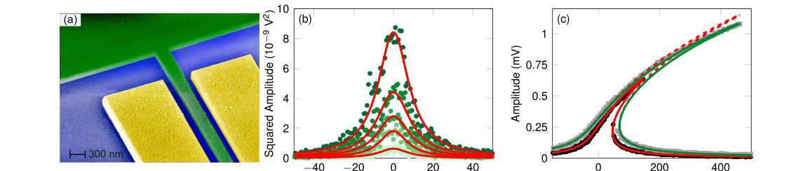
<figcaption class="paper-figure-caption"><b>Fig 1.</b> FIG. 1. (a) Scanning electron micrograph of a doubly-clamped silicon nitride string resonator (green) and flanking electrodes (gold). (b) Frequency response for different drive powers in the linear regime (−63 dBm, −59 dBm, −57 dBm, −54.5 dBm, −52 dBm depicted as light to dark green dots). Red lines represent Lorentzian fits to the data. (c) Frequency response for drive powers of −35 dBm (black dots) and −30 dBm (grey squares). The red solid line depicts a fit of the −35 dBm curve with the Duffing model yielding 𝛼1 = 4.170 · 1025 kg−1 m−2, see Eq. (A14). The red dashed line shows the same model at −30 dBm. The green solid line shows a fit with the extended model with 𝛼2 = 8.402 · 1046 s...</figcaption>
</figure>
<figure class="paper-figure-card">
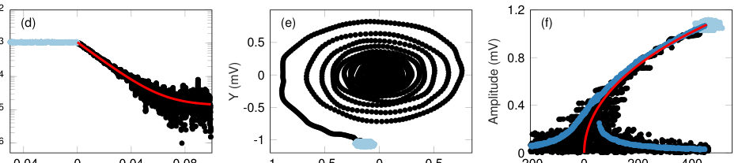
<figcaption class="paper-figure-caption"><b>Fig 2.</b> FIG. 2. Ringdown measurements in and beyond the Duffing regime. Turquoise and black dots show the response amplitude before and after switching off the drive. (a),(d) Amplitude response at a drive power of −35 dBm ( −30 dBm) applied at the upper bifurcation point. The red line represents an exponential fit to the data. (b),(e) Phase-space representation of the ringdown measurement, depicting the quadrature (Y) vs. the in-phase (X) component for the data shown in (a) and (d), respectively. The spiraling trajectory confirms the decay of the amplitude. (c),(f) Backbone relation for the ringdowns shown in (a) and (d), respectively. The backbone is extracted from the time derivative of the phase...</figcaption>
</figure>
<figure class="paper-figure-card">
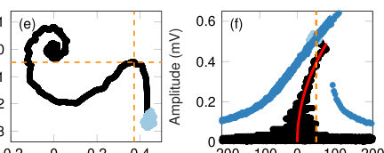
<figcaption class="paper-figure-caption"><b>Fig 3.</b> FIG. 3. (a) Frequency response at a drive power of −26 dBm. The red solid line shows a fit with the extended nonlinear model that includes 𝛼2 and 𝛼3. (b) Ringdown measurement for the same drive power applied at the upper bifurcation point. Turquoise (black) points show the amplitude signal before (after) switching off the drive. The red line represents the exponential fit to the data. (c) Phase space representation of the ringdown measurement, showing the quadrature (Y) vs. the in-phase (X) component of the data using the same color code as in (b). (d) Backbone relation for the ringdown. The backbone is extracted from the time derivative of the phase signal. It is shifted in frequency by...</figcaption>
</figure>
<figure class="paper-figure-card">
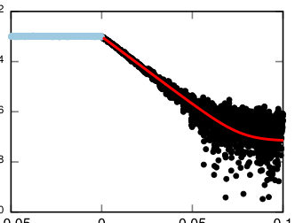
<figcaption class="paper-figure-caption"><b>Fig 4.</b> FIG. 4. Action decay measured at the upper bifurcation point for a drive power of −26 dBm, corresponding to the largest amplitude explored in this work. The ringdown follows an exponential decay, confirming the linear damping hypothesis.</figcaption>
</figure>
<figure class="paper-figure-card">
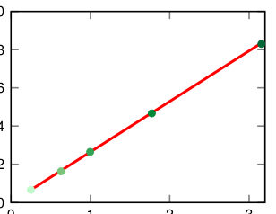
<figcaption class="paper-figure-caption"><b>Fig 5.</b> FIG. 5. Extracted maximum of frequency response curves for drive powers ranging from −63 dBm to −52 dBm (light to dark green, as in Fig. 1(a) of the main text) plotted over the square of the driving volt- age. From the linear fit, depicted in red, we can obtain the calibration parameter c that relates the drive to the response amplitude. In our case, we obtain 𝑐= 0.2645.</figcaption>
</figure>
</div>

<p><strong>Summary.</strong> The paper introduces a novel, robust method using the 'backbone curve' derived from ringdown measurements to accurately characterize higher-order conservative nonlinearities in nanomechanical resonators. By analyzing the frequency dependence on amplitude, this technique overcomes limitations of conventional methods that suffer from frequency drift or are restricted in their nonlinearity scope. This advancement is crucial for utilizing these high-precision mechanical systems in advanced quantum sensing applications.</p>
<p><strong>Why it may be interesting.</strong> This work is highly relevant to open quantum systems and quantum optics because nanomechanical resonators are increasingly used as high-precision mechanical oscillators whose nonlinear dynamics must be precisely characterized for use in quantum sensing or cavity optomechanics.</p>
<details>
<summary>Detailed structure</summary>
<p><strong>Main problem.</strong> The primary goal is developing a robust method to accurately extract higher-order conservative nonlinearities from nanomechanical resonators, especially those that are symmetry-breaking.</p>
<p><strong>Main result.</strong> The proposed backbone curve method successfully extracts nonlinearity coefficients ($\alpha_i$) with high accuracy, showing superior robustness against frequency fluctuations compared to conventional fitting techniques.</p>
<p><strong>Method.</strong> The core technique involves using ringdown measurements to construct a 'backbone curve' that maps the instantaneous oscillation frequency versus amplitude, which is then used in conjunction with action-angle formalisms for coefficient extraction.</p>
<p><strong>Model / system.</strong> The system studied is a high-Q nanomechanical string resonator (silicon nitride on fused silica). The dynamics are modeled by an anharmonic potential $U(q) = \sum M_i \gamma_i q^i$, and the frequency dependence $\omega(A)$ is derived from the action-angle formalism.</p>
<p><strong>Key observables.</strong> Nonlinear eigenfrequency $\omega(A)$, nonlinear coefficients ($\alpha_i$ or $\gamma_i$), ringdown decay time constant ($  au$), and the backbone curve $\omega_{	ext{inst}}(A)$.</p>
<p><strong>Important parameters / regimes.</strong> High-Q factor, operating temperature (293 K), drive power levels (e.g., $-35 	ext{ dBm}$), and nonlinearity coefficients $\alpha_1, \alpha_2, \dots$.</p>
<p><strong>Assumptions / limitations.</strong> The method assumes negligible nonlinear damping over the measured amplitude range; initial analysis often relies on single-mode approximations.</p>
<p><strong>Figures summary.</strong> Figures illustrate ringdown measurements, phase space trajectories to accurately determine the start time ($t_0$), and plots comparing nonlinearity coefficients derived from different fitting approaches (e.g., response curve vs. backbone fit).</p>
<p><strong>Paper structure.</strong> The paper progresses by first establishing the physical system and theoretical framework ($\omega(A)$), then detailing multiple measurement techniques (Duffing fits, ringdown analysis), and finally advocating for and validating the superior robustness of the backbone-based extraction method.</p>
</details>
<details>
<summary>Abstract</summary>
<p>Nanomechanical resonators are a powerful platform for studying nonlinear dynamics with high sensitivity and precision. We explore the nonlinear response of a high-Q nanomechanical string resonator in and beyond the Duffing regime and introduce a robust framework for accurately extracting its conservative nonlinearities. The method is based on the backbone curve obtained from ringdown measurements, making it inherently resilient to small frequency fluctuations while explicitly accounting for both symmetry-breaking and non-symmetry-breaking nonlinearities. To validate the approach, we perform complementary ringdown and frequency-response measurements on the nanostring resonator and benchmark the backbone-based extraction against established frequency-response techniques. The comparison confirms the accuracy of the proposed framework and demonstrates its advantages over conventional methods for nonlinear characterization.</p>
</details>
<p><sub><a href="#top">↑ back to top</a></sub></p>

<p><a id="paper-2608.02384"></a></p>
<h3 id="second-harmonic-generation-in-twisted-double-bilayer-graphene-double-resonant-enhancement-from-moire-flat-bands"><a href="http://arxiv.org/abs/2608.02384v1">Second-harmonic generation in twisted double bilayer graphene: Double-resonant enhancement from moiré flat bands</a></h3>
<p><strong>Authors:</strong> Takaaki V. Joya, Takuto Kawakami, Mikito Koshino<br>
<strong>Type:</strong> theory · <strong>Category:</strong> other · <strong>PDF:</strong> <a href="https://arxiv.org/pdf/2608.02384v1">https://arxiv.org/pdf/2608.02384v1</a><br>
<strong>Analysis basis:</strong> full PDF text, analyzed in chunks
<strong>Topic relevance:</strong> <code>Keldysh / 2PI / non-Gaussian methods</code> <strong>1/5</strong> · <code>interference shaping light</code> <strong>1/5</strong></p>
<div class="figure-strip-hint">↔ Scroll figures horizontally</div>
<div class="paper-figures-scroll">
<figure class="paper-figure-card">
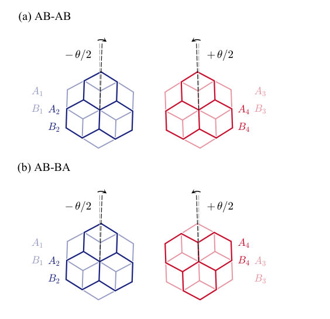
<figcaption class="paper-figure-caption"><b>Fig 1.</b> FIG. 1. Stacking configurations of (a) AB–AB-stacked and (b) AB–BA-stacked twisted double bilayer graphene (TDBG).The lower BLG (blue) and the upper BLG (red) are rotated by ∓𝜃/2 and stacked on top of each other.</figcaption>
</figure>
<figure class="paper-figure-card">
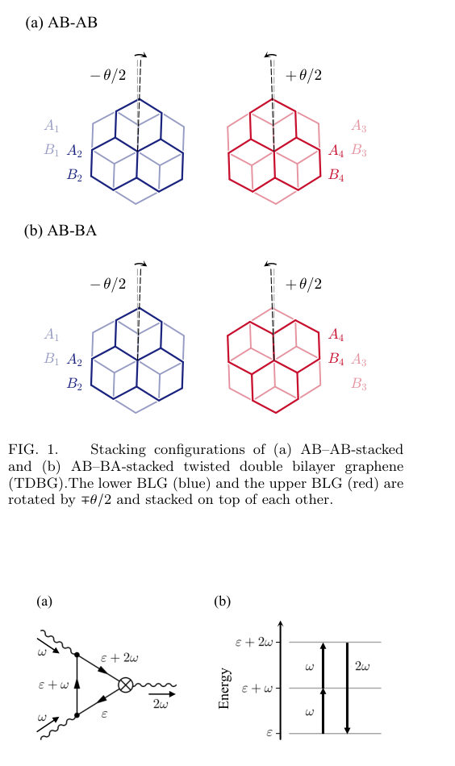
<figcaption class="paper-figure-caption"><b>Fig 2.</b> FIG. 2. (a) Feynman diagram that is relevant to AB-stacked bilayer graphene and TDBG. The dots represent the interact- ing Hamiltonians and the crossed circle represents the current density operator. (b) Microscopic three-step optical transi- tion that generates SHG.</figcaption>
</figure>
<figure class="paper-figure-card">
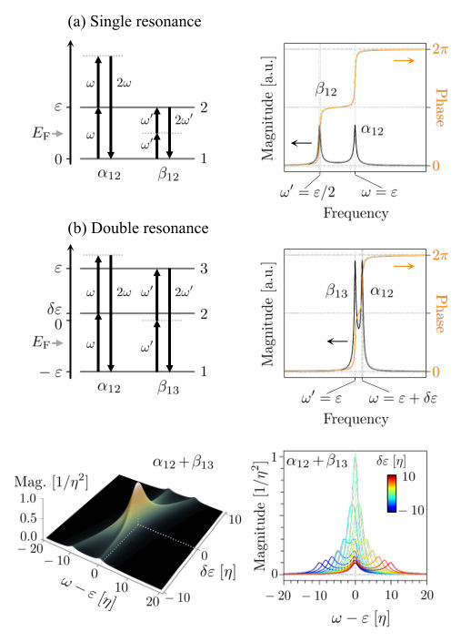
<figcaption class="paper-figure-caption"><b>Fig 3.</b> FIG. 3. Schematic diagrams of the processes involved in the SHG signal. (a) Single resonances via one-photon (𝛼12) and two-photon (𝛽12) processes between two energy levels, shown on the left. The 𝛼12 and 𝛽12 processes produce a peak at 𝜔= 𝜀and 𝜔′ = 𝜀/2 respectively. (b) Top two panels show the situation approaching double resonance involving three levels, where the 𝛼12 and 𝛽13 processes produce a peak at 𝜔= 𝜀as 𝛿𝜀→0. Bottom two panels are the plots of the double-resonant signal as a function of 𝛿𝜀. It can be seen that the signal is significantly enhanced as 𝛿𝜀approaches 0. The family of curves is universal, expressed in units involving the broadening parameter 𝜂.</figcaption>
</figure>
<figure class="paper-figure-card">
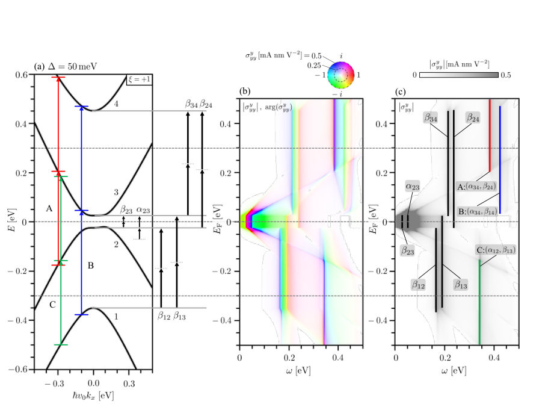
<figcaption class="paper-figure-caption"><b>Fig 4.</b> FIG. 4. (a) Band structure of non-moir´e AB-stacked bilayer graphene from the 𝐾+ valley. A vertical bias voltage of Δ = 50 meV is applied across the two layers. (b) Magnitude and phase of the SHG tensor, 𝜎𝑦 𝑦𝑦 and arg(𝜎𝑦 𝑦𝑦), as a function of (𝜔; 𝐸F) on a colour-density plot, where we plot 𝜔and 𝐸F on the horizontal and vertical axes. Namely, arg(𝜎𝑦 𝑦𝑦) is given by the hue while 𝜎𝑦 𝑦𝑦 is given by the saturation. We note that the scale of the vertical axes of the band structure and the density maps are aligned. (c) Colour-density plot of the magnitude 𝜎𝑦 𝑦𝑦 with indications of the important spectral features.</figcaption>
</figure>
<figure class="paper-figure-card">
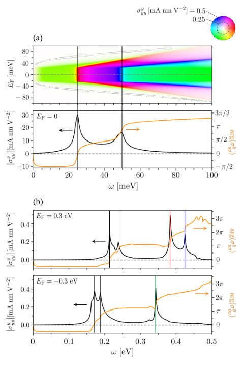
<figcaption class="paper-figure-caption"><b>Fig 5.</b> FIG. 5. (a) Zoomed-in view of the colour-density plot near the CNP shown in the top panel. The bottom panel shows the slice through 𝐸F = 0, the where magnitude and phase are plotted in black and orange, respectively. The vertical lines are the 𝛼23 and 𝛽23 peaks indicated in Fig. 4 (c). (b) Top (bottom) panel is a slice through 𝐸F = 0.3 eV (𝐸F = −0.3 eV), where, again, the vertical lines correspond to the features indicated in Fig. 4 (c).</figcaption>
</figure>
</div>

<p><strong>Summary.</strong> This theoretical study analyzes the nonlinear optical response, specifically Second-Harmonic Generation (SHG), in twisted double bilayer graphene. The key finding is the identification of a 'double-resonant' mechanism that significantly enhances the SHG signal by simultaneously satisfying optical transitions at both $\omega$ and $2\omega$. This provides a general framework for controlling non-linear optics in moiré materials.</p>
<p><strong>Why it may be interesting.</strong> This work provides a detailed quantum optical analysis of tunable electronic structures (moiré bands), which is highly relevant to understanding non-linear responses in designer quantum materials that can be tuned via external fields like bias voltage.</p>
<details>
<summary>Detailed structure</summary>
<p><strong>Main problem.</strong> The study investigates the mechanism behind enhanced Second-Harmonic Generation (SHG) in twisted double bilayer graphene (TDBG). The focus is on identifying and quantifying the 'double-resonant' enhancement beyond standard moiré flat band effects.</p>
<p><strong>Main result.</strong> The authors demonstrate that a pronounced double-resonant process, where optical transitions at both $\omega$ and $2\omega$ are simultaneously satisfied, leads to substantial amplification of the SHG response. They also find distinct symmetry signatures ($\pi$-phase shift) between AB–AB and AB–BA stacking configurations.</p>
<p><strong>Method.</strong> The investigation uses a perturbative approach based on an effective continuum Hamiltonian derived for the moiré scale. The calculation involves deriving the nonlinear susceptibility tensor $\sigma_{\mu\alpha\alpha}$ using Green's function formalism.</p>
<p><strong>Model / system.</strong> The physical system is Twisted Double Bilayer Graphene (TDBG), which exhibits a moiré superlattice at small twist angles ($ heta$). The model employs an effective continuum Hamiltonian incorporating interlayer moiré interactions, analyzed across varying bias voltages and Fermi energies.</p>
<p><strong>Key observables.</strong> Second-Harmonic Generation (SHG) signal strength, nonlinear susceptibility $\sigma_{\mu\alpha\alpha}$, and the resonance structure related to single or double resonances.</p>
<p><strong>Important parameters / regimes.</strong> Twist angle ($  heta$), vertical bias voltage ($V_{AB}$), Fermi energy ($E_F$), and stacking configuration (AB–AB vs AB–BA).</p>
<p><strong>Assumptions / limitations.</strong> The analysis relies on coarse-graining the system to the moiré scale at small $  heta$, and approximations are made in the perturbative expansion of the Hamiltonian.</p>
<p><strong>Figures summary.</strong> Figures illustrate stacking configurations, Feynman diagrams for Hamiltonian construction, and color-density maps showing SHG spectra revealing single and double resonance features.</p>
<p><strong>Paper structure.</strong> The paper systematically analyzes the SHG response by first establishing the effective continuum model for TDBG. It then details the calculation of the nonlinear susceptibility using perturbation theory, culminating in the identification and theoretical description of the double-resonant enhancement mechanism.</p>
</details>
<details>
<summary>Abstract</summary>
<p>We theoretically investigate second-harmonic generation (SHG) in twisted double bilayer graphene (TDBG) with AB--AB and AB--BA stacking configurations using a perturbative approach based on an effective continuum Hamiltonian. We present a systematic analysis of the SHG response as a function of twist angle, vertical bias voltage, Fermi energy, and stacking configuration. We find that the SHG signal is strongly enhanced at small twist angles due to the emergence of moiré flat bands and the associated increase in the joint density of states. Beyond this conventional enhancement mechanism, we demonstrate that the reduced bandwidth enables a pronounced double-resonant process, in which optical transitions at both $ω$ and $2ω$ are simultaneously satisfied over extended regions of the moiré Brillouin zone. This mechanism leads to a substantial amplification of the SHG response, analogous to the enhancement observed in systems with discrete energy levels, but realised here in a tuneable moiré band structure. Furthermore, we show that the AB--AB and AB--BA configurations exhibit a systematic $π$ phase shift in the SHG response at large bias voltages, reflecting their distinct symmetry and electronic structure. Our results identify double-resonance effects as a generic mechanism for enhancing SHG in moiré systems and provide a unified framework for understanding and controlling nonlinear optical responses in tuneable flat-band materials.</p>
</details>
<p><sub><a href="#top">↑ back to top</a></sub></p>

<p><a id="paper-2608.00390"></a></p>
<h3 id="skyrmion-excitations-in-the-math1921math-quantum-hall-state-in-monolayer-graphene"><a href="http://arxiv.org/abs/2608.00390v1">Skyrmion Excitations in the $ν=-1$ Quantum Hall state in Monolayer Graphene</a></h3>
<p><strong>Authors:</strong> Jincheng An, Ajit C. Balram, Ganpathy Murthy<br>
<strong>Type:</strong> theory · <strong>Category:</strong> strongly correlated electrons · <strong>PDF:</strong> <a href="https://arxiv.org/pdf/2608.00390v1">https://arxiv.org/pdf/2608.00390v1</a><br>
<strong>Analysis basis:</strong> full PDF text, analyzed in chunks
<strong>Topic relevance:</strong> <code>Keldysh / 2PI / non-Gaussian methods</code> <strong>1/5</strong> · <code>analog quantum simulation</code> <strong>1/5</strong></p>
<div class="figure-strip-hint">↔ Scroll figures horizontally</div>
<div class="paper-figures-scroll">
<figure class="paper-figure-card">
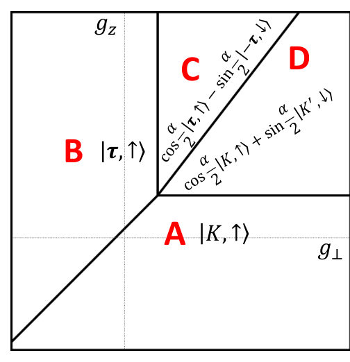
<figcaption class="paper-figure-caption"><b>Fig 1.</b> FIG. 1: The ν = −1 QHFM ground state phase diagram with g⊥, gz ∈[−400, 800] meV · nm2. External fields are fixed at EZ = 1eZ &amp; EV = 0.3eZ. There are four different phases: A, B, C, &amp; D. The occupied spinor for a given phase is presented in the region occupied by the phase.</figcaption>
</figure>
<figure class="paper-figure-card">
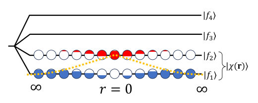
<figcaption class="paper-figure-caption"><b>Fig 2.</b> FIG. 2: Schematic representation of a skyrmion excited state upon the ν = −1 QHFM ground state. The skyrmion spinor |χ(r)⟩is a linear combination between the occupied spinor |f1⟩and an orthogonal spinor |f2⟩, which is unoccupied in the ground state, but occupied at the core of the skyrmion.</figcaption>
</figure>
<figure class="paper-figure-card">
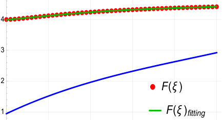
<figcaption class="paper-figure-caption"><b>Fig 3.</b> FIG. 3: Dependence of the dimensionless functions F(ξ) and X(ξ) on ξ, defined in Eqs. (35) and (39), respectively. The monotonic increase of both functions indicates that increasing ξ raises both the stiffness energy of the non- linear sigma model and the Coulomb interaction energy of the skyrmion.</figcaption>
</figure>
<figure class="paper-figure-card">
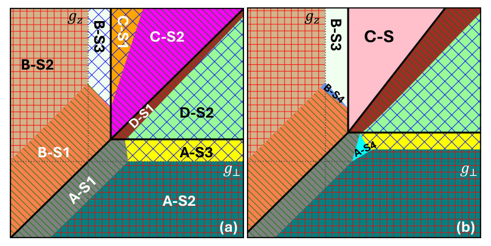
<figcaption class="paper-figure-caption"><b>Fig 4.</b> FIG. 4: Skyrmion phases above the ν = −1 QHFM ground states with g⊥∈[−400, 800]meV · nm2, gz ∈[−400, 800]meV · nm2. The one-body fields are fixed at EZ = 1eZ &amp; EV = 0 in panel (a), and at EZ = 1eZ &amp; EV = 0.3eZ in panel (b). At EV = 0, there are ten skyrmion phases: A-S1-S3, B-S1-S3, C-S1-S2, &amp; D-S1-S2. At finite EV , two new skyrmion phases, A-S4 and B-S4, appear, while C-S1 and C-S2 merge into a new skyrmion phase C-S. The solid black lines indicate the boundaries between the QHFM ground state phases. Phases with Ξ = 2 in Eq. (45) are hatched with red ‘+’ symbols, phases with Ξ = 0 are hatched with blue ‘x’ symbols, and phases with Ξ = −2 are hatched with green ‘\\’ symbols. The unhatched...</figcaption>
</figure>
<figure class="paper-figure-card">
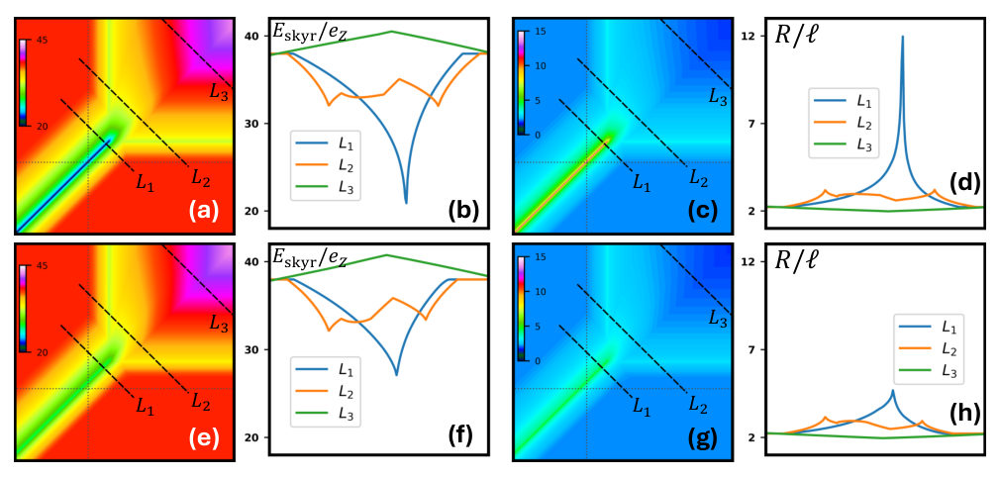
<figcaption class="paper-figure-caption"><b>Fig 5.</b> FIG. 5: (a) Skyrmion energy Eskyr (in unit of eZ) over a range of couplings for EV = 0, corresponding to the phase diagram of Fig. 4(a). (b) The skyrmion energy of panel (a) is plotted along the three different sections L1, L2 &amp; L3, shown in panel (a). (c) The size R of the optimal skyrmion (in units of ℓ) over a range of couplings for EV = 0, also associated with the skyrmion phase diagram Fig. 4(a). (d) The size of the skyrmion plotted along the three sections L1, L2 &amp; L3 of panel (a). (e) Skyrmion energy for a range of couplings for EV = 0.3EZ, corresponding to the phase diagram of Fig. 4(b). (f) The skyrmion energy in units of eZ plotted along the sections L1, L2 &amp; L3 of panel (e). (g)...</figcaption>
</figure>
</div>

<p><strong>Summary.</strong> This paper theoretically investigates skyrmion excitations within the $\nu=-1$ quantum Hall ferromagnetic state of monolayer graphene. Using a variational approach combined with Hartree-Fock methods, the authors map out a complex phase diagram featuring thirteen distinct skyrmion phases. The work establishes a general framework for studying topological excitations in multicomponent quantum Hall ferromagnets.</p>
<p><strong>Why it may be interesting.</strong> This work provides advanced theoretical tools for understanding topological excitations (skyrmions) in highly correlated electron systems like graphene under extreme conditions, which is relevant to modern condensed matter theory.</p>
<details>
<summary>Detailed structure</summary>
<p><strong>Main problem.</strong> The study investigates skyrmion excited states atop the SU(4) quantum Hall ferromagnetic ground state at filling factor $\nu=-1$ in monolayer graphene.</p>
<p><strong>Main result.</strong> The authors establish a phase diagram identifying thirteen distinct skyrmion phases under varying external field conditions, providing a systematic framework for such excitations.</p>
<p><strong>Method.</strong> A variational framework combining effective field theory with the Hartree-Fock approximation is used to minimize the total energy functional of the skyrmion texture.</p>
<p><strong>Model / system.</strong> The system is monolayer graphene subjected to a perpendicular magnetic field, modeled by an effective Hamiltonian incorporating long-range Coulomb interaction, short-range anisotropic interactions, Zeeman coupling, and sublattice symmetry-breaking potentials.</p>
<p><strong>Key observables.</strong> Phase diagram of skyrmion excitations; spin-valley textures, energies, and characteristic sizes of the identified phases.</p>
<p><strong>Important parameters / regimes.</strong> Filling factor $\nu=-1$; external field strengths ($E_Z, E_V$); interaction parameters ($g_\perp, g_z$).</p>
<p><strong>Assumptions / limitations.</strong> The analysis relies on a variational ansatz for the skyrmion projector and assumes that certain energy contributions can be calculated using approximations like slow variation over the magnetic length scale.</p>
<p><strong>Figures summary.</strong> Figure 1 shows the $\nu=-1$ QHFM ground state phase diagram in the $(g_\perp, g_z)$ plane with four distinct phases (A, B, C, D). Figure 2 schematically represents a skyrmion excited state using spinor components.</p>
<p><strong>Paper structure.</strong> The paper first establishes the $\nu=-1$ QHFM ground state phase diagram. It then develops a variational approach to calculate the total energy of skyrmions by summing stiffness, Coulomb, and symmetry-breaking contributions, leading to the identification of multiple distinct phases.</p>
</details>
<details>
<summary>Abstract</summary>
<p>We investigate the skyrmion excited states atop the $SU(4)$ quantum Hall ferromagnetic ground state at filling factor $ν=-1$ in monolayer graphene. The competition among short-range anisotropic interactions, the Zeeman coupling, and sublattice symmetry-breaking potential gives rise to four distinct spin-valley-ordered ground-state phases. Combining effective field theory with the Hartree--Fock approximation, we develop a variational framework that incorporates both the long-range Coulomb interaction and the symmetry-breaking terms on an equal footing. Variational minimization determines the optimal skyrmion texture, including both its spatial radial profile and internal $SU(4)$ spinor structure. We establish the phase diagram of skyrmion excitations, identify thirteen distinct skyrmion phases under different external-field conditions, and determine their spin-valley textures, energies, and characteristic sizes. The robustness of the results against different radial ansätze demonstrates the reliability of our variational approach. Our work provides a systematic framework for studying skyrmion excitations in multicomponent quantum Hall ferromagnets and can be naturally extended to more general $SU(4)$ quantum Hall systems.</p>
</details>
<p><sub><a href="#top">↑ back to top</a></sub></p>

<p><a id="paper-2608.01257"></a></p>
<h3 id="active-passivation-tunes-hotspot-locations-in-gan-transistors-with-in-situ-thermal-mechanical-visualization"><a href="http://arxiv.org/abs/2608.01257v1">Active Passivation Tunes Hotspot Locations in GaN Transistors with In Situ Thermal Mechanical Visualization</a></h3>
<p><strong>Authors:</strong> Yicheng Wei, Sihang Liu, Zimu Jiang, jinquan Zhang, Zifeng Huang, Han Yang, Yang He, Jin Wei, Zhe Cheng<br>
<strong>Type:</strong> both · <strong>Category:</strong> other · <strong>PDF:</strong> <a href="https://arxiv.org/pdf/2608.01257v1">https://arxiv.org/pdf/2608.01257v1</a><br>
<strong>Analysis basis:</strong> full PDF text, analyzed in chunks
<strong>Topic relevance:</strong> <code>non-equilibrium dynamics</code> <strong>1/5</strong></p>
<div class="figure-strip-hint">↔ Scroll figures horizontally</div>
<div class="paper-figures-scroll">
<figure class="paper-figure-card">
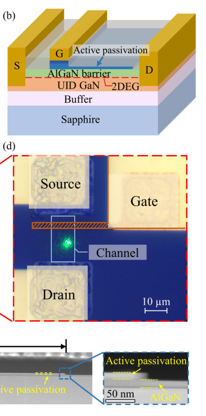
<figcaption class="paper-figure-caption"><b>Fig 1.</b> Figure 1. Sample structure. (a) Schematic structure of the Conv-HEMT and (b) the AP-</figcaption>
</figure>
<figure class="paper-figure-card">
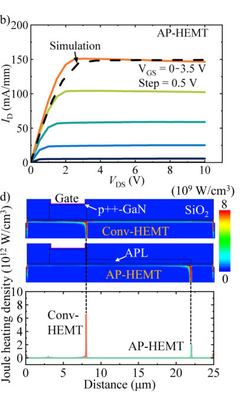
<figcaption class="paper-figure-caption"><b>Fig 2.</b> Figure 2. Measured and simulated electrical properties for the Conv-HEMT and the AP-</figcaption>
</figure>
<figure class="paper-figure-card">
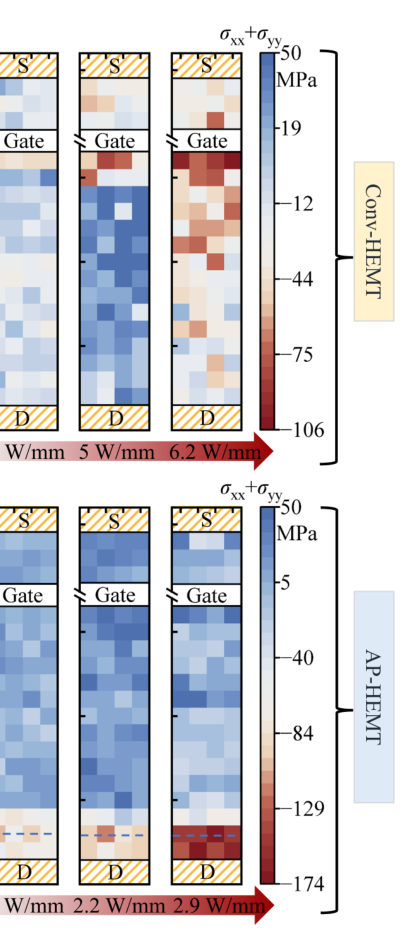
<figcaption class="paper-figure-caption"><b>Fig 3.</b> Figure 3. Measured thermomechanical profiles of the partially scanned active channel</figcaption>
</figure>
<figure class="paper-figure-card">
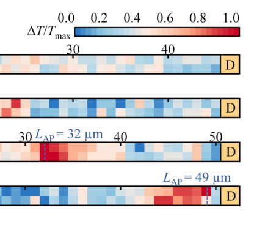
<figcaption class="paper-figure-caption"><b>Fig 4.</b> Figure 5. Normalized temperature rises (ΔT/Tmax) and hotspot positions of the AP-</figcaption>
</figure>
<figure class="paper-figure-card">
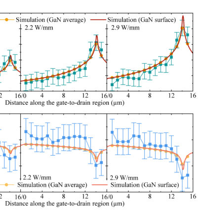
<figcaption class="paper-figure-caption"><b>Fig 5.</b> Figure 6. Thermal and mechanical simulations of the AP-HEMT with LGS/LG/LGD/LAP</figcaption>
</figure>
</div>

<p><strong>Summary.</strong> This work demonstrates a novel technique using active passivation layers to proactively control where heat is generated within GaN transistors. By adjusting this layer, researchers can intentionally shift the hotspot away from critical areas like the gate edge towards the drain end. This approach offers crucial guidelines for designing high-power electronics by co-optimizing electric fields and thermal management.</p>
<p><strong>Why it may be interesting.</strong> While focused on solid-state electronics, the core concept of using structural modification (passivation) to manage localized energy deposition and resulting stress fields has parallels in controlling energy flow or minimizing dissipation hotspots in quantum devices.</p>
<details>
<summary>Detailed structure</summary>
<p><strong>Main problem.</strong> Localized Joule heating in GaN transistors operating at high power densities degrades performance by inducing thermal and mechanical stresses. Existing methods focus on external heat removal, ignoring the intrinsic behavior of the heat source.</p>
<p><strong>Main result.</strong> Active passivation layers can proactively tune hotspot locations by shifting peak electric fields and localized Joule heating from the gate edge to the drain-side end of the active passivation layer.</p>
<p><strong>Method.</strong> The study combines in-situ micro-Raman thermography for experimental measurement with multi-physics electro-thermal-mechanical simulations (TCAD/FEA) for validation.</p>
<p><strong>Model / system.</strong> The physical system is a GaN High Electron Mobility Transistor (HEMT), comparing conventional structures to those enhanced with an Active Passivation layer. The analysis models the coupled electro-thermal-mechanical response under high bias conditions.</p>
<p><strong>Key observables.</strong> Hotspot location, temperature rise ($\Delta T$), in-plane thermal stress profiles, peak electric field distribution, and device saturation current.</p>
<p><strong>Important parameters / regimes.</strong> Active Passivation layer length (LAP), gate-drain distance (LGD), and applied bias/power density.</p>
<p><strong>Assumptions / limitations.</strong> The analysis assumes that manipulating the passivation structure can directly control the spatial redistribution of peak electric fields and subsequent heat generation, which is confirmed by simulation against experimental measurements.</p>
<p><strong>Figures summary.</strong> Figures compare electrical properties, simulated electric field/Joule heating for conventional vs. active passivation devices; Figure 3 shows $\Delta T$ and stress maps comparing both structures; Figure 5 demonstrates the one-to-one correlation between LAP length and hotspot position.</p>
<p><strong>Paper structure.</strong> The paper first establishes the problem of localized Joule heating, then introduces the AP structure to proactively tune hotspots. It presents electrical characterization, followed by in-situ thermal/mechanical visualization (Raman thermography), which is validated against coupled multi-physics simulations to confirm the hotspot migration mechanism.</p>
</details>
<details>
<summary>Abstract</summary>
<p>Efficient thermal dissipation has become critical in emerging electronic devices. However, most existing studies have primarily focused on engineering heat dissipation pathways, largely overlooking the intrinsic behavior of the heat source itself. We demonstrate an active passivation technology that proactively tunes hotspot locations in GaN transistors. By adjusting the active passivation layer length, the hotspot is shifted from the gate edge to the drain-side AP edge, establishing a clear one-to-one spatial correlation. In-situ thermal-mechanical visualization via micro-Raman thermography, combined with multi-physics electro-thermal-mechanical simulations, directly captures the spatial redistribution of both temperature and thermal stress profiles. Electrical analysis confirms that this hotspot migration is driven by the spatial shift of the peak electric field and localized Joule heating. This proactive heat-source tuning strategy provides critical design guidelines for power electronics.</p>
</details>
<p><sub><a href="#top">↑ back to top</a></sub></p>

<p><a id="paper-2608.02544"></a></p>
<h3 id="thermal-stability-of-two-dimensional-crystals-with-extended-oh-hydrogen-bonded-chains"><a href="http://arxiv.org/abs/2608.02544v1">Thermal Stability of Two-Dimensional Crystals with Extended OH Hydrogen-Bonded Chains</a></h3>
<p><strong>Authors:</strong> Alexander V. Savin<br>
<strong>Type:</strong> theory · <strong>Category:</strong> statistical mechanics · <strong>PDF:</strong> <a href="https://arxiv.org/pdf/2608.02544v1">https://arxiv.org/pdf/2608.02544v1</a><br>
<strong>Analysis basis:</strong> full PDF text, analyzed in chunks
<strong>Topic relevance:</strong> <code>Frenkel-Kontorova</code> <strong>1/5</strong></p>
<div class="figure-strip-hint">↔ Scroll figures horizontally</div>
<div class="paper-figures-scroll">
<figure class="paper-figure-card">
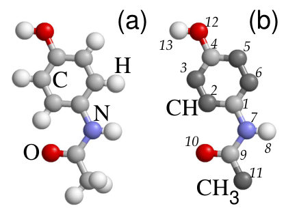
<figcaption class="paper-figure-caption"><b>Fig 1.</b> FIG. 1: Construction of the coarse-grained model for the paracetamol (PCM) molecule: (a) all-atom representation and (b) coarse-grained model (the numbering of interaction sites is shown). Hydrogen atoms are shown in white, carbon atoms in light gray, nitrogen in blue, oxygen in red, and the united CH and CH3 atoms in dark gray.</figcaption>
</figure>
<figure class="paper-figure-card">
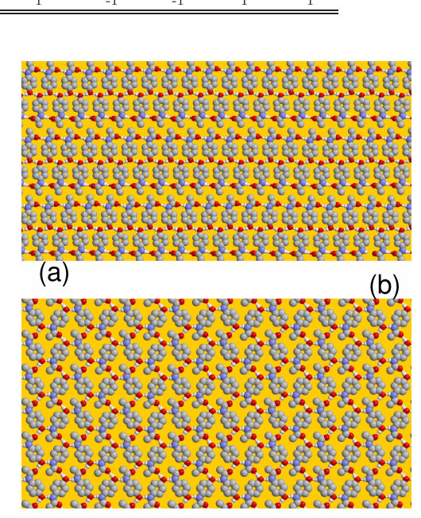
<figcaption class="paper-figure-caption"><b>Fig 2.</b> FIG. 3: Crystal structure of (a) a homochiral and (b) a racemic layer of paracetamol molecules deposited on a flat h-BN crystal surface. Carbon atoms are shown in gray, ni- trogen in blue, oxygen in red, and hydrogen in white; the flat substrate is shown in yellow. Hydrogen bonds between the hydroxyl and peptide groups are shown as red-and-white lines..</figcaption>
</figure>
<figure class="paper-figure-card">
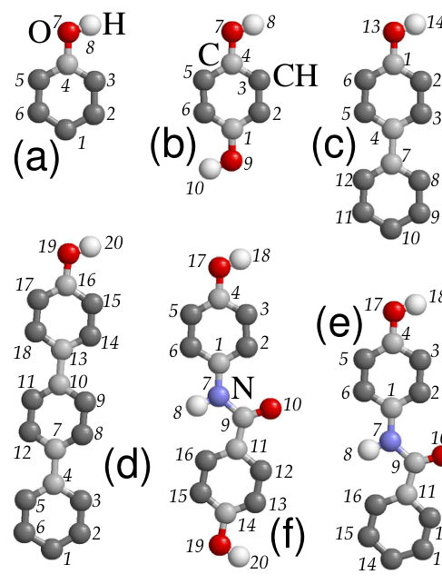
<figcaption class="paper-figure-caption"><b>Fig 3.</b> FIG. 2: Coarse-grained models of the (a) phenol C6H5OH, (b) hydroquinone C6H4(OH)2, (c) 4-phenylphenol C6H5–C6H4OH, (d) 4-(4-phenylphenyl)phenol C6H5–C6H4– C6H4OH, (e) 4-hydroxybenzanilide C6H5C(O)NHC6H4OH, and (f) 4,4-dihydroxybenzanilide C6H4OHC(O)NHC6H4OH molecules. Hydrogen atoms (H) are shown in white, carbon atoms (C) in light gray, nitrogen atoms (N) in blue, oxygen atoms (O) in red, and united CH groups in dark gray. For each structure, the numbering of atoms used in the molecules is shown.</figcaption>
</figure>
<figure class="paper-figure-card">
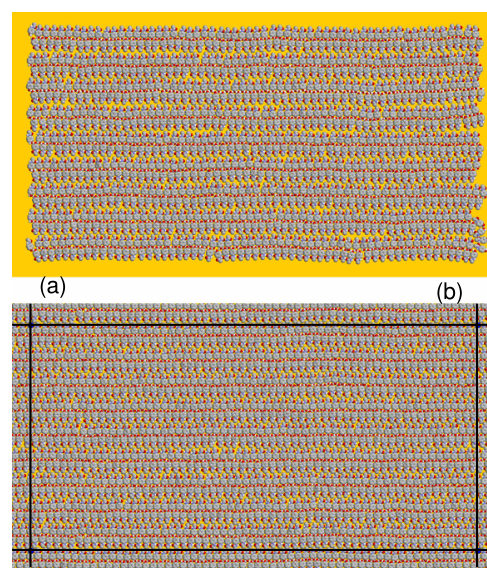
<figcaption class="paper-figure-caption"><b>Fig 4.</b> FIG. 4: Structure of a two-dimensional crystal composed of N = 1080 PCM molecules adsorbed on a planar h-BN sub- strate. The molecular arrangement of a crystallite formed by 9 parallel molecular chains is presented for (a) open (free) boundary conditions and (b) periodic boundary conditions, with simulation box dimensions of ax × ay = 60 × 60 nm2</figcaption>
</figure>
<figure class="paper-figure-card">

<figcaption class="paper-figure-caption"><b>Fig 5.</b> FIG. 6: Temperature dependence of (a) phb (solid lines) and ps (dashed lines); (b) c for the racemic structure of N = 1080 PCM molecules. Curves 1 and 3 correspond to a rectangular crystallite with free edges, while curves 2 and 4 correspond to a two-dimensional crystal fully covering the substrate. Verti- cal dotted lines indicate temperatures of 370, 480, 540, and 560 K.</figcaption>
</figure>
</div>

<p><strong>Summary.</strong> This work uses molecular dynamics simulations to study how organic molecules with hydroxyl groups form stable two-dimensional crystals on h-BN substrates via extended hydrogen bonds. The research demonstrates that these crystalline structures possess remarkable thermal stability, suggesting a viable pathway for creating advanced proton-exchange membranes capable of operating at elevated temperatures.</p>
<p><strong>Why it may be interesting.</strong> While focused on condensed matter materials science, the detailed study of phase transitions (2D vs. 3D melting) using MD simulations provides rich data for statistical mechanics models concerning low-dimensional systems and interfacial physics.</p>
<details>
<summary>Detailed structure</summary>
<p><strong>Main problem.</strong> The study investigates the thermal stability of two-dimensional (2D) crystalline structures formed by organic molecules adsorbed on a hexagonal boron nitride (h-BN) substrate.</p>
<p><strong>Main result.</strong> The resulting 2D crystals exhibit high thermal stability, with measured onset melting temperatures ranging up to $377^\circ	ext{C}$ for specific molecular arrangements. These stable structures suggest potential use in developing high-temperature proton-exchange membranes (PEMs).</p>
<p><strong>Method.</strong> Molecular Dynamics (MD) simulations were employed to model the atomic interactions and thermal evolution of the adsorbed monolayers.</p>
<p><strong>Model / system.</strong> The system consists of planar molecules containing benzene rings and hydroxyl groups, forming extended hydrogen-bonded chains ($    ext{OH}\cdots   ext{OH}\cdots$). These are deposited on a flat h-BN substrate. The simulation uses detailed force fields incorporating Lennard-Jones potentials and specific interaction terms.</p>
<p><strong>Key observables.</strong> Onset melting temperatures ($T_m$), heat capacity $c(T)$, number of hydrogen bonds ($ar{N}_{hb}$), and fraction of molecules adsorbed flat ($p_s$).</p>
<p><strong>Important parameters / regimes.</strong> Temperature range up to $\sim 550$ K (in simulation units); specific molecular structures like hydroquinone, paracetamol, etc.</p>
<p><strong>Assumptions / limitations.</strong> The substrate interaction is modeled using a fixed attractive plane approximation for the h-BN sheet; the dynamics are simulated via Langevin equations of motion.</p>
<p><strong>Figures summary.</strong> Figures illustrate crystal structures (e.g., $ ext{4PhPh}$ and $   ext{44PhPhPh}$) on h-BN, and temperature dependence plots comparing solid/liquid phases for different molecular systems.</p>
<p><strong>Paper structure.</strong> The paper progresses by establishing the physical model (molecules on h-BN), simulating various molecules to confirm stable 2D crystal formation via H-bonding, quantifying thermal stability through melting point measurements, and concluding with applications in high-temperature PEMs.</p>
</details>
<details>
<summary>Abstract</summary>
<p>Numerical simulations of the dynamics of monolayer structures of molecules deposited on a sheet of hexagonal boron nitride (h-BN) have been performed. It is shown that molecules containing benzene rings and hydroxyl groups in their structure can form stable two-dimensional crystals with linear chains of hydrogen bonds OH$\cdots$OH$\cdots$OH$\cdots$ Such structures are formed by the following molecules: phenol (C$_6$H$_5$OH), hydroquinone (C$_6$H$_4$(OH)$_2$), 4-phenylphenol (C$_6$H$_5$--C$_6$H$_4$OH), 4-(4-phenylphenyl)phenol (C$_6$H$_5$--C$_6$H$_4$--C$_6$H$_4$OH), paracetamol (CH$_3$C(O)NHC$_6$H$_4$OH), 4-hydroxybenzanilide (C$_6$H$_5$C(O)NHC$_6$H$_4$OH) and 4,4-dihydroxybenzanilide (C$_6$H$_4$OHC(O)NHC$_6$H$_4$OH). On the one hand, the benzene rings in these molecules ensure their strong interaction with the flat substrate; on the other hand, they do not hinder the formation of extended hydrogen-bonded chains. The monolayer structures of these molecules exhibit high thermal stability: the onset melting temperatures of their 2D crystals are 47, 187, 127, 247, 167, 307, and 377 $^\circ$C, respectively. The simulations allow us to conclude that multilayer structures composed of h-BN sheets and molecules of hydroquinone, paracetamol, and 4-hydroxybenzanilide can be used for the development of novel proton-exchange membranes capable of operating at elevated temperatures.</p>
</details>
<p><sub><a href="#top">↑ back to top</a></sub></p>
<h3 id="other-secondary-papers-5">Other secondary papers (5)</h3>
<details>
<summary>Show other secondary papers</summary>

<p><a id="paper-2608.01209"></a></p>
<h3 id="bulk-ising-superconductivity-in-an-intercalated-tase2-bilayer-structure"><a href="http://arxiv.org/abs/2608.01209v1">Bulk Ising superconductivity in an intercalated TaSe2 bilayer structure</a></h3>
<p><strong>Authors:</strong> Yupeng Li, Zhaopeng Guo, Lihong Hu, Guoan Li, Siqi Wu, Xinyi Zheng, Xiao Deng, Zhiyuan Zhang, Anqi Wang, Xingchen Guo, Ziwei Dou, Peiling Li, Yuke Li, Fanming Qu, Guangtong Liu, Jin-Ke Bao, Guang-Han Cao, Li Lu, Jie Shen, Zhu-An Xu<br>
<strong>Type:</strong> both · <strong>Category:</strong> other · <strong>PDF:</strong> <a href="https://arxiv.org/pdf/2608.01209v1">https://arxiv.org/pdf/2608.01209v1</a><br>
<strong>Analysis basis:</strong> full PDF text, analyzed in chunks</p>
<div class="figure-strip-hint">↔ Scroll figures horizontally</div>
<div class="paper-figures-scroll">
<figure class="paper-figure-card">

<figcaption class="paper-figure-caption"><b>Fig 1.</b> FIG. 1. Structure and superconductivity of bulk InBr(TaSe2)2. (a) Side view of the crystalline structure, highlighting the alternating 2Hb-TaSe2 bilayers and InBr spacer layers. (b) HRTEM image of InBr(TaSe2)2 taken along the [100] zone axis, with an overlaid atomic model. The inset shows the reconstructed image for (hk0) planes from SXRD data. (c) R-T curve with a magnified view of the transition (lower right inset) and the corresponding magnetic susceptibility (upper left inset). (d, e) Superconducting transitions under B⊥and B∥, respectively. (f) T-dependent B⊥ c2 and B∥ c2 for three bulk samples. (g) Band structure of bulk InBr(TaSe2)2, with spin-up (Sz &gt; 0) and spin-down (Sz &lt; 0)...</figcaption>
</figure>
<figure class="paper-figure-card">

<figcaption class="paper-figure-caption"><b>Fig 2.</b> FIG. 2. Thickness-dependent superconductivity. (a) Angular dependent Bc2 at 1.51 K for the 3-UC device. The data above 90◦is mirrored from the data below 90◦for clarity of presentation. (b) Rs map as a function of T and B⊥for the 1 UC device S1, showing the extracted B⊥ c2 together with the corresponding 2D GL fit. The inset shows an optical photograph of the device and its thickness measurement. (c) T-dependent Rs measured under varying B∥. The extracted B∥ c2 are fitted by 2D GL and KLB model. (d) T-R/RN curves for devices of varying thickness. (e) Thickness-dependent Tc. (f) nh as a function of thickness, with the dashed guide line. (g) T/Tc-dependent B∥ c2/Bp at different samples. The...</figcaption>
</figure>
<figure class="paper-figure-card">

<figcaption class="paper-figure-caption"><b>Fig 3.</b> Figure 2 explores the thickness-dependent supercon- ductivity in InBr(TaSe2)2 to further study the exception- ally large B∥ c2 behavior. Temperature-dependent sheet</figcaption>
</figure>
<figure class="paper-figure-card">

<figcaption class="paper-figure-caption"><b>Fig 4.</b> FIG. 3. Rs-Bz (a-d) and Rs-T curves (e-h) for different InBr(TaSe2)2 flakes. (i) B-dependent zv with theoretical fits for 1-UC flakes. The error bar of zv is obtained during the scaling analysis. (j,k) Thickness-dependent resistance enhancement ratio ∆R/RN (blue scatters, blue dashed guide line), B∥ c2/Bp [red scatters extracted from Fig. 2(g) at T/Tc = 0.88, red guide line], superconducting transition width ∆Tc = T 90% c - T 10% c (green scatters, green dashed guide line), τ (magenta guide range).</figcaption>
</figure>
<figure class="paper-figure-card">

<figcaption class="paper-figure-caption"><b>Fig 5.</b> FIG. 4. (a-d) dV/dI map as a function of Ib and Bz for 2, 5, 12 and 20 UC at 0.3 K. (e-h) Bz-dependent ∆Ic. A smooth guide curve (pink line) is included to clarify the overall trend. (i) dV/dI-Ib curves for positive and negative current sweep under ±6 mT. (j) Superconducting half-wave rectification at Bz = -7 mT and 0.3 K in the device S3. (k) Bz-η behaviors at different thicknesses. The inset displays the thickness-dependent η, with values taken as the maximum magnitude in panel (k). (l) Thickness-dependent Bc1. Magenta points are extracted from the peak positions indicated by black arrows in panels (e-h). Cyan and orange symbols represent Bc1 values obtained under B∥and B⊥in Bulk S15 (see...</figcaption>
</figure>
</div>
<p><strong>Summary.</strong> The study reports on bulk and thin-film superconductors based on intercalated $    ext{TaSe}_2$ bilayers. By measuring anisotropic critical fields and observing a persistent Superconducting Diode Effect, the authors provide strong evidence that Ising Spin-Orbit Coupling is the key mechanism driving their unconventional superconductivity. This research advances the search for materials exhibiting robust, high-field superconducting states.</p>
<p><strong>Why it may be interesting.</strong> This work provides experimental evidence for realizing and characterizing exotic superconducting states driven by strong spin-orbit coupling in layered materials, which is highly relevant to understanding unconventional superconductivity mechanisms beyond BCS theory.</p>
<details>
<summary>Detailed structure</summary>
<p><strong>Main problem.</strong> The study investigates the emergence of bulk Ising superconductivity (IS) in intercalated TaSe2 bilayers, specifically aiming to explain an exceptionally large upper critical field ($B_{c2}$) exceeding the Pauli limit.</p>
<p><strong>Main result.</strong> Multiple experimental and theoretical analyses strongly support that the observed superconducting behavior is governed by Ising Spin-Orbit Coupling (SOC), which manifests as anisotropic $B_{c2}$ and a persistent Superconducting Diode Effect (SDE).</p>
<p><strong>Method.</strong> The research combines synthesis of noncentrosymmetric bilayers, transport measurements ($R$-$T$, $B$-field sweeps), theoretical band structure calculations (DFT), and fitting to advanced superconducting models (AGL, Tinkham).</p>
<p><strong>Model / system.</strong> The physical system is the intercalated $   ext{InBr}(  ext{TaSe}_2)_2$ bilayer, which possesses a noncentrosymmetric rhombohedral crystal structure. The superconductivity is analyzed across bulk and thin-film limits.</p>
<p><strong>Key observables.</strong> Anisotropic upper critical fields ($B_{\parallel}c_2$, $B_{\perp}c_2$), the ratio $B_{\parallel}c_2/B_p$ (observed to be large, e.g., $\sim 3.56$), and the Superconducting Diode Effect ($\Delta I_c$).</p>
<p><strong>Important parameters / regimes.</strong> Superconducting transition temperature ($T_c = 2.26 	ext{ K}$), Pauli limit ($B_p$), and thickness dependence of superconducting parameters.</p>
<p><strong>Assumptions / limitations.</strong> The authors attribute the large $B_{\parallel}c_2/B_p$ ratio and SDE primarily to Ising SOC, ruling out other mechanisms like Superconducting Orbital Screening (SOS) or Meissner screening as the sole cause.</p>
<p><strong>Figures summary.</strong> Figures illustrate crystal structure confirmation (HRTEM/SXRD), anisotropic superconducting behavior via $B_{c2}$ vs. field plots, thickness dependence of $T_c$ and $B_{\parallel}c_2/B_p$, and mapping of the Superconducting Diode Effect ($\Delta I_c$).</p>
<p><strong>Paper structure.</strong> The paper progresses by first establishing bulk superconductivity and its anisotropy, then using thickness-dependent measurements and SDE analysis to distinguish between competing pairing mechanisms (Ising SOC vs. SOS), culminating in a comprehensive conclusion favoring Ising SOC.</p>
</details>
<details>
<summary>Abstract</summary>
<p>Ising spin-orbit coupling in bulk systems has drawn considerable interest for its ability to conveniently construct spin-orbit environments and enable exotic quantum phenomena. In this work, we synthesize intercalated 2Hb-TaSe$_2$ bilayers with noncentrosymmetric structure and, through multifaceted analysis, present multiple lines of evidence for the emergence of bulk Ising superconductivity. Resistivity measurements reveal anisotropic superconducting behavior, with a remarkably large in-plane upper critical field $B_{c2}^{\|}$ that exceeds the Pauli limit $B_{p}$. Band structure calculations further show band splitting accompanied by out-of-plane spin polarization. Collectively, these observations point to the presence of Ising superconductivity. Additional measurements of the thickness-dependent ratio $B_{c2}^{\|}$/$B_{p}$ and the superconducting diode effect not only further support the Ising superconducting nature of this material, but also reveal additional features of bulk Ising superconductivity evolving with thickness. Our findings provide valuable insights that may contribute to the search for bulk Ising superconductors.</p>
</details>
<p><sub><a href="#top">↑ back to top</a></sub></p>

<p><a id="paper-2608.02344"></a></p>
<h3 id="cryogenic-focused-ion-beam-microstructuring-enabling-quantitative-math1994math-axis-transport-measurements-in-tlmath1995mathbamath1996mathcuomath1997math"><a href="http://arxiv.org/abs/2608.02344v1">Cryogenic focused-ion-beam microstructuring enabling quantitative $c$-axis transport measurements in Tl$_2$Ba$_2$CuO$_{6+δ}$</a></h3>
<p><strong>Authors:</strong> Ayanesh Maiti, Carsten Putzke, Linus Holeschovsky, Roemer D. H. Hinlopen, Chunyu Guo, Dorothee Herrmann, Seunghyun Khim, Berit H. Goodge, Andre W. Tyler, Michele S. Conroy, Andreas W. Rost, Andrew P. Mackenzie, Philip J. W. Moll<br>
<strong>Type:</strong> experiment · <strong>Category:</strong> strongly correlated electrons · <strong>PDF:</strong> <a href="https://arxiv.org/pdf/2608.02344v1">https://arxiv.org/pdf/2608.02344v1</a><br>
<strong>Analysis basis:</strong> full PDF text, analyzed in chunks</p>
<div class="figure-strip-hint">↔ Scroll figures horizontally</div>
<div class="paper-figures-scroll">
<figure class="paper-figure-card">

<figcaption class="paper-figure-caption"><b>Fig 1.</b> FIG. 1. Cryogenic suppression of FIB-induced damage in Tl2201. a. Crystal structure of Tl2Ba2CuO6+δ, highlighting the interstitial O(4) sites and the lattice O(2) sites that control hole doping and are depleted by vacuum annealing. b. Transport measurements on a Tl2201 single crystal before and after device fabrication using standard FIB microstructuring techniques. Ion-beam exposure increases Tc in overdoped Tl2201 (grey arrow), consistent with oxygen loss driving the material towards optimal doping. The FIB-patterned devices shown here are likely inhomogeneous and do not represent the intrinsic behaviour of Tl2201 at any well-defined doping level. c. Magnetic susceptibility measurements...</figcaption>
</figure>
<figure class="paper-figure-card">

<figcaption class="paper-figure-caption"><b>Fig 2.</b> FIG. 2. Structural integrity of cryo-FIB microstructured Tl2201. a. Gnomonic projections of single-crystal XRD datasets acquired from a bulk Tl2201 crystal and a cryo-FIB-milled lamella. Both datasets exhibit identical Bragg reflections consistent with the known crystal structure of Tl2201, indicating that cryogenic microstructuring preserves long-range crystalline order. b. Atomic-resolution images of a cryo-FIB lamella acquired using HAADF-STEM and iDPC imaging. The observed atomic arrangement is consistent with the expected Tl2201 crystal structure, demonstrating preservation of the lattice at the atomic scale. c. Single-crystal XRD precession images compared with selected area electron...</figcaption>
</figure>
<figure class="paper-figure-card">

<figcaption class="paper-figure-caption"><b>Fig 3.</b> FIG. 3. Validation of transport measurements in cryo-FIB microstructured Tl2201. a. False-coloured SEM image of a representative ab-plane transport device with a six-terminal geometry, enabling simultaneous four-point measurements of the in-plane resistivity and Hall effect. b. In-plane resistivity of annealed cryo-FIB microstructured devices. The measured temperature dependence is quantitatively consistent with transport measurements on bulk single crystals, indicating that cryo- FIB processing preserves the intrinsic in-plane transport properties of Tl2201. c. Antisymmetrised Hall resistivity of a cryo-FIB device near optimal doping above Tc. The Hall response is linear in magnetic field,...</figcaption>
</figure>
<figure class="paper-figure-card">

<figcaption class="paper-figure-caption"><b>Fig 4.</b> FIG. 4. Intrinsic c-axis transport in cryo-FIB microstructured Tl2201. a. False-coloured SEM image of a repre- sentative c-axis transport device used for four-point resistivity measurements. The microstructured geometry enables precise determination of the current path and sample dimensions, allowing accurate measurement of the absolute c-axis resistivity. b. Temperature dependence of the c-axis resistivity ρc measured in cryo-FIB microstructured Tl2201 devices spanning a range of hole dopings. The measured behaviour is qualitatively consistent with previous reports on bulk single crystals, exhibiting metallic transport at high temperature and a systematic reduction in ρc with increasing...</figcaption>
</figure>
<figure class="paper-figure-card">

<figcaption class="paper-figure-caption"><b>Fig 5.</b> FIG. 5. Intrinsic transport anisotropy in Tl2201. Transport anisotropy ρc/ρab obtained from the cryo-FIB c-axis resistivity measurements of Fig.4 and bulk in-plane transport data of Fig.3. The resulting anisotropy is systematically larger than previous transport estimates [16, 34] by approximately the same factor by which the absolute c-axis resistivity is enhanced. For comparison, zero-temperature anisotropy values calculated from the known dHvA and AMRO Fermi surface geometry of overdoped Tl2201, assuming an isotropic relaxation time [9], are also shown. Dashed lines are a guide to the eye, indicating a possible smooth extrapolation of the electrical transport anisotropy below Tc. In...</figcaption>
</figure>
</div>
<p><strong>Summary.</strong> This paper introduces cryogenic Focused-Ion-Beam (cryo-FIB) microstructuring as a breakthrough technique to perform quantitative transport measurements on cuprate superconductors. By suppressing ion-beam damage, the authors obtain significantly higher and more reliable $c$-axis resistivity values for $   ext{Tl}2201$. These results resolve long-standing discrepancies by showing that the measured transport anisotropy aligns quantitatively with theoretical predictions derived from quantum oscillation data.</p>
<p><strong>Why it may be interesting.</strong> This work provides an advanced experimental technique (cryo-FIB) to overcome fundamental sample preparation limitations in high-$T_c$ superconductors. The quantitative agreement achieved between different physical probes ($
ho_c/
ho_{ab}$ vs dHvA) is highly relevant for understanding the underlying electronic structure of strongly correlated materials.</p>
<details>
<summary>Detailed structure</summary>
<p><strong>Main problem.</strong> Absolute transport measurements in cuprate superconductors are limited by sample disorder, inhomogeneity, and geometric uncertainty inherent to standard microfabrication techniques.</p>
<p><strong>Main result.</strong> Cryogenic Focused-Ion-Beam (cryo-FIB) microstructuring enables reliable quantitative $c$-axis resistivity ($
ho_c$) measurements, yielding values significantly larger than previous reports and bringing the transport anisotropy into agreement with quantum oscillation data.</p>
<p><strong>Method.</strong> The authors fabricated highly controlled lamellae from single crystals using cryo-FIB and performed four-point electrical transport measurements on both the ab-plane and c-axis directions.</p>
<p><strong>Model / system.</strong> The study focuses on the overdoped cuprate superconductor $ ext{Tl}<em 6_delta="6+\delta">2   ext{Ba}_2   ext{CuO}</em>2201$). The electronic properties are investigated by measuring transport coefficients across different doping levels controlled by oxygen stoichiometry.}$ ($ ext{Tl</p>
<p><strong>Key observables.</strong> In-plane resistivity ($
ho_{ab}(T)$), $c$-axis resistivity ($
ho_c(T)$), Hall carrier density, and the ratio $
ho_c/
ho_{ab}$ (transport anisotropy).</p>
<p><strong>Important parameters / regimes.</strong> Temperature range (2–300 K), magnetic field up to 14 T, and oxygen doping level controlled by annealing.</p>
<p><strong>Assumptions / limitations.</strong> The primary assumption is that cryo-FIB processing successfully mitigates ion-beam damage and thermal degradation mechanisms (like oxygen loss) that plague standard FIB methods in cuprates.</p>
<p><strong>Figures summary.</strong> Figures compare $
ho_{ab}(T)$ and magnetic susceptibility ($\chi(T)$) showing structural preservation via cryo-FIB. Key figures show the measured $
ho_c(T)$ values, which are systematically enhanced compared to literature, and a final plot confirming that the calculated transport anisotropy matches theoretical predictions from quantum oscillations.</p>
<p><strong>Paper structure.</strong> The paper first establishes the limitations of prior measurements due to sample damage. It then details the cryo-FIB methodology for preparing high-quality lamellae. Results are presented by validating in-plane measurements, followed by the critical $c$-axis transport measurements, culminating in a reconciliation between measured anisotropy and theoretical Fermi surface models.</p>
</details>
<details>
<summary>Abstract</summary>
<p>Absolute transport measurements in correlated quantum materials are often limited by disorder, inhomogeneity, geometric uncertainty, and small crystal size. Focused ion beam (FIB) technology offers a route to overcome many of these limitations by enabling transport devices with precisely defined geometry to be fabricated from lamellae extracted from carefully selected regions of a crystal, but its application to cuprate superconductors has been hindered by ion-beam-induced damage. Here we study the clean overdoped cuprate Tl2201 and show that conventional FIB processing causes thermally driven oxygen loss, while cryogenic FIB microstructuring largely suppresses this degradation and preserves the crystal structure from the bulk to the atomic scale. Microstructured devices quantitatively reproduce established in-plane resistivity and Hall carrier density measurements without rescaling. Applying this approach to $c$-axis transport, we obtain absolute $ρ_c(T)$ values approximately three times larger than previously reported, bringing the transport anisotropy into quantitative agreement with the known Fermi surface geometry within an isotropic relaxation-time approximation. These results resolve a long-standing discrepancy between transport and quantum oscillation measurements in overdoped Tl2201 and establish cryogenic FIB microstructuring as a route to reliable quantitative transport measurements in quantum materials where disorder, inhomogeneity, geometry, or small crystal size have previously limited experimental accuracy.</p>
</details>
<p><sub><a href="#top">↑ back to top</a></sub></p>

<p><a id="paper-2608.01293"></a></p>
<h3 id="deformation-algorithm-deforming-21-dimensional-integrable-systems-to-higher-dimensional-ones"><a href="http://arxiv.org/abs/2608.01293v1">Deformation algorithm: Deforming (2+1)-dimensional integrable systems to higher dimensional ones</a></h3>
<p><strong>Authors:</strong> Wang Fa-Ren, Jia Man, Lou S Y<br>
<strong>Type:</strong> theory · <strong>Category:</strong> other · <strong>PDF:</strong> <a href="https://arxiv.org/pdf/2608.01293v1">https://arxiv.org/pdf/2608.01293v1</a><br>
<strong>Analysis basis:</strong> full PDF text, analyzed in chunks</p>
<div class="figure-strip-hint">↔ Scroll figures horizontally</div>
<div class="paper-figures-scroll">
<figure class="paper-figure-card">

<figcaption class="paper-figure-caption"><b>Fig 1.</b> Low-resolution page preview, page 2</figcaption>
</figure>
<figure class="paper-figure-card">

<figcaption class="paper-figure-caption"><b>Fig 2.</b> Low-resolution page preview, page 3</figcaption>
</figure>
<figure class="paper-figure-card">

<figcaption class="paper-figure-caption"><b>Fig 3.</b> Low-resolution page preview, page 4</figcaption>
</figure>
<figure class="paper-figure-card">

<figcaption class="paper-figure-caption"><b>Fig 4.</b> Low-resolution page preview, page 5</figcaption>
</figure>
<figure class="paper-figure-card">

<figcaption class="paper-figure-caption"><b>Fig 5.</b> Low-resolution page preview, page 6</figcaption>
</figure>
</div>
<p><strong>Summary.</strong> This paper develops a unified mathematical framework to extend integrable nonlinear equations like KP and NNV from 2+1 dimensions into higher dimensional systems. By using covariant deformation operators, the authors construct infinite hierarchies of solutions and derive their Lax pairs. This work provides a general method for understanding how symmetries and integrability are preserved when moving to higher spatial dimensions.</p>
<p><strong>Why it may be interesting.</strong> While focused on classical PDEs, the mathematical machinery of finding infinite symmetries and conserved quantities through deformation operators is highly relevant to constructing effective Hamiltonians or characterizing integrability in complex quantum field theories or many-body models.</p>
<details>
<summary>Detailed structure</summary>
<p><strong>Main problem.</strong> The primary goal is extending the deformation algorithm, which lifts integrable systems from (1+1)-dimensions to higher dimensions, specifically tackling the challenging case of (2+1)-dimensional models.</p>
<p><strong>Main result.</strong> The authors establish a unified framework for deforming both the anisotropic KP and isotropic NNV equations into infinite families of $(m+3)$-dimensional integrable hierarchies, yielding novel reciprocal links.</p>
<p><strong>Method.</strong> They employ a covariant deformation framework using mutually commuting field-dependent operators ($\hat{X}, \hat{Y}, \hat{T}$) and rigorously verify integrability by ensuring the vanishing commutator condition for derived Lax pairs.</p>
<p><strong>Model / system.</strong> The study focuses on classical nonlinear integrable partial differential equations, namely the Kadomtsev-Petviashvili (KP) equation and the Nizhnik-Novikov-Veselov (NNV) equation. These are generalized into high-dimensional master systems.</p>
<p><strong>Key observables.</strong> Lax integrability, infinite families of conservation laws, closed-form Lax pairs, and the structure of reciprocal integrable links.</p>
<p><strong>Important parameters / regimes.</strong> The dimensionality ($m+3$), deformation parameters ($p_i, q_i, r_i$), and specific reduction constraints (e.g., setting auxiliary variables to zero).</p>
<p><strong>Assumptions / limitations.</strong> The analysis relies on the existence of commuting deformation operators and uses traveling wave ansatz to find explicit solutions for the high-dimensional systems.</p>
<p><strong>Figures summary.</strong> Not specified in the notes, but the paper discusses deriving Lax pairs (Eq. 7, Eq. 62–63) and solving resulting ODEs using elliptic integrals (Eq. 78).</p>
<p><strong>Paper structure.</strong> The structure moves from identifying the open problem (generalizing to 2+1 D), introducing the unified deformation framework for KP/NNV, constructing the high-dimensional hierarchies, deriving Lax pairs, analyzing specific truncations (e.g., 3+1 D, 4+1 D), and finally establishing the universal route to reciprocal links.</p>
</details>
<details>
<summary>Abstract</summary>
<p>The deformation algorithm based on conservation laws can lift (1+1)-dimensional integrable systems to higher-dimensional counterparts while preserving Lax integrability, yet its generalization to (2+1)-dimensional models has remained an open problem. This paper establishes a unified deformation framework for two (2+1)-dimensional integrable equations: the anisotropic Kadomtsev-Petviashvili (KP) equation and the isotropic Nizhnik-Novikov-Veselov (NNV) equation. By introducing a set of mutually commuting field-dependent deformation operators, we systematically construct infinite families of ($m+3$)-dimensional integrable KP and NNV hierarchies, derive their closed-form Lax pairs, and rigorously verify integrability via the vanishing commutator condition of Lax operators. For each high-dimensional hierarchy, concrete finite-dimensional master systems are obtained by truncating auxiliary spatial variables: a (3+1)-dimensional KP system and a (4+1)-dimensional generalized NNV system. Further symmetry reductions recover the original (2+1)-dimensional KP and NNV equations, and more importantly produce two distinct Harry-Dym (HD)-type reciprocal integrable systems. The KP reduction yields an anisotropic (2+1)-dimensional HD model, while the NNV reduction generates the first spatially isotropic two-space-dimensional HD system reported so far, filling a notable gap in existing literature. Parallel comparison of the KP and NNV branches reveals that the spatial symmetry of the original two-dimensional parent equation directly governs the symmetry properties of its high-dimensional deformations and HD dual subsystems. Our work not only extends the conservation-law deformation conjecture beyond (1+1)-dimensions to accommodate both strong Lax and weak Lax structures, but also provides a universal route to construct reciprocal links for multi-dimensional integrable systems.</p>
</details>
<p><sub><a href="#top">↑ back to top</a></sub></p>

<p><a id="paper-2608.02042"></a></p>
<h3 id="enhanced-and-robust-superconductivity-in-la08sr02nio2-membranes-compressed-up-to-210-gpa"><a href="http://arxiv.org/abs/2608.02042v1">Enhanced and robust superconductivity in La0.8Sr0.2NiO2 membranes compressed up to 210 GPa</a></h3>
<p><strong>Authors:</strong> Shu Cai, Yuqing Tian, Shengjun Yan, Jinyu Zhao, Bo Hao, Jianfeng Zhang, Shuaihang Sun, Yang Ding, Qi Wu, Ho-kwang Mao, I. Bozovic, Yuefeng Nie, Liling Sun<br>
<strong>Type:</strong> experiment · <strong>Category:</strong> strongly correlated electrons · <strong>PDF:</strong> <a href="https://arxiv.org/pdf/2608.02042v1">https://arxiv.org/pdf/2608.02042v1</a><br>
<strong>Analysis basis:</strong> full PDF text, analyzed in chunks</p>
<div class="figure-strip-hint">↔ Scroll figures horizontally</div>
<div class="paper-figures-scroll">
<figure class="paper-figure-card">

<figcaption class="paper-figure-caption"><b>Fig 1.</b> Figure 1 Ambient-pressure characterization of the freestanding infinite-layer</figcaption>
</figure>
<figure class="paper-figure-card">

<figcaption class="paper-figure-caption"><b>Fig 2.</b> Figure 2 The membrane and electrode configuration on the diamond culet, and</figcaption>
</figure>
<figure class="paper-figure-card">

<figcaption class="paper-figure-caption"><b>Fig 3.</b> Figure 3. Superconductivity enhancement in compressed La0.8Sr0.2NiO2</figcaption>
</figure>
<figure class="paper-figure-card">

<figcaption class="paper-figure-caption"><b>Fig 4.</b> Figure 4 Characterization of the superconducting transition and upper critical</figcaption>
</figure>
<figure class="paper-figure-card">

<figcaption class="paper-figure-caption"><b>Fig 5.</b> Figure 5 Pressure-temperature phase diagram of La0.8Sr0.2NiO2 membranes up to</figcaption>
</figure>
</div>
<p><strong>Summary.</strong> This work reports on the superconducting behavior of freestanding $    ext{La}<em 0.2>{0.8}   ext{Sr}</em>_2$ membranes subjected to ultrahigh pressures up to 210 GPa. The key finding is that superconductivity remains robust, showing a characteristic dome-like increase in transition temperature, peaking at 74.5 K under compression before gradually decreasing. This demonstrates a novel pathway for studying high-$T_c$ superconductivity without substrate constraints.}   ext{NiO</p>
<p><strong>Why it may be interesting.</strong> The study provides empirical evidence for superconductivity enhancement far beyond pressures where other high-$T_c$ superconductors fail, offering insights into the fundamental electronic mechanisms governing pairing in nickelates under extreme compression.</p>
<details>
<summary>Detailed structure</summary>
<p><strong>Main problem.</strong> To investigate the enhanced and robust superconductivity in infinite-layer nickelate membranes under extreme high pressures, overcoming substrate limitations.</p>
<p><strong>Main result.</strong> Superconductivity persists up to 210 GPa, exhibiting a dome-like evolution where $T_{c	ext{onset}}$ peaks at 74.5 K at 146 GPa before decreasing slightly.</p>
<p><strong>Method.</strong> High-pressure electrical resistance measurements were performed <em>in situ</em> using Diamond Anvil Cells (DAC) on freestanding $ ext{La}<em 0.2>{0.8}   ext{Sr}</em>_2$ membranes.}   ext{NiO</p>
<p><strong>Model / system.</strong> The system is the infinite-layer nickelate superconductor, $    ext{La}<em 0.2>{0.8}   ext{Sr}</em>_2$, studied as freestanding membranes to eliminate substrate effects common in high-pressure studies of cuprates and other oxides.}   ext{NiO</p>
<p><strong>Key observables.</strong> Superconducting transition onset temperature ($T_{	ext{conset}}$), critical magnetic field ($\mu_0H_{c2}$), and resistance vs. temperature/pressure curves.</p>
<p><strong>Important parameters / regimes.</strong> Pressure range up to 210 GPa; peak $T_{c	ext{onset}} = 74.5 	ext{ K}$ at $P = 146 	ext{ GPa}$.</p>
<p><strong>Assumptions / limitations.</strong> The superconducting state enhancement is genuine, confirmed by the simultaneous increase in both $T_{	ext{conset}}$ and $\mu_0H_{c2}$ with pressure.</p>
<p><strong>Figures summary.</strong> Figures show XRD confirming the infinite-layer phase, zero-field resistance measurements before/after transfer, and multiple panels illustrating the evolution of $T_{	ext{conset}}(P)$ across the entire pressure range.</p>
<p><strong>Paper structure.</strong> The paper establishes the context by noting the success of nickelates over cuprates. It details sample preparation (membranes) and measurement techniques under DAC compression. The core results present the quantitative dome-like dependence of $T_{	ext{conset}}$ on pressure, culminating in the discussion of robustness up to 210 GPa.</p>
</details>
<details>
<summary>Abstract</summary>
<p>The discovery of superconductivity in infinite-layer nickelate thin films has opened a new frontier for exploring unconventional oxide superconductors beyond the copper oxide family. However, the presence of substrate hampers investigations under very high pressure. Recently, this problem was circumvented by a study of freestanding Nd0.85Sr0.15NiO2 membranes, which revealed that superconducting transition temperature kept increasing as the pressure was ramped up to 91 GPa, without showing signs of saturation. Naturally, one wonders what would happen at even higher pressures. Here, we report that superconductivity in a freestanding La0.8Sr0.2NiO2 membrane persists under applied ultrahigh pressures up to 210 GPa. The superconducting transition onset temperature exhibits a continuous dome-like evolution, increasing from 16 K at ambient pressure to a peak of 74.5 K at 146 GPa, and then gradually decreasing to 57.4 K at 210 GPa. Such robustness of superconductivity against ultrahigh pressure has not been observed in high-Tc oxide superconductors before.</p>
</details>
<p><sub><a href="#top">↑ back to top</a></sub></p>

<p><a id="paper-2608.02362"></a></p>
<h3 id="superconducting-ternary-compounds-li-x-b-xmo-w-within-the-mild-pressure-range-first-principles-predictions"><a href="http://arxiv.org/abs/2608.02362v1">Superconducting ternary compounds Li-X-B (X=Mo, W) within the mild pressure range: First-principles predictions</a></h3>
<p><strong>Authors:</strong> Bangshuai Zhu, Juefei Wu, Dexi Shao, Junjie Wang, Yu Han, Cuiying Pei, Qi Wang, Jian Sun, Yanpeng Qi<br>
<strong>Type:</strong> theory · <strong>Category:</strong> other · <strong>PDF:</strong> <a href="https://arxiv.org/pdf/2608.02362v1">https://arxiv.org/pdf/2608.02362v1</a><br>
<strong>Analysis basis:</strong> full PDF text, analyzed in chunks</p>
<div class="figure-strip-hint">↔ Scroll figures horizontally</div>
<div class="paper-figures-scroll">
<figure class="paper-figure-card">

<figcaption class="paper-figure-caption"><b>Fig 1.</b> FIG. 1 The ternary composition line (TCL) in the ternary convex hulls of Li-W-B at 40 GPa. (a)</figcaption>
</figure>
<figure class="paper-figure-card">

<figcaption class="paper-figure-caption"><b>Fig 2.</b> FIG. 2 (a)-(d) The ternary convex hulls of Li-W-B system under high pressures. The circle and black</figcaption>
</figure>
<figure class="paper-figure-card">

<figcaption class="paper-figure-caption"><b>Fig 3.</b> FIG. 3 (a) The crystal structure of the predicted phase Li2WB6 P6/mmm and ELF at (2-10) plane</figcaption>
</figure>
<figure class="paper-figure-card">

<figcaption class="paper-figure-caption"><b>Fig 4.</b> FIG. 4 The band structures and partial density of states (PDOS) of the predicted phases of (a)</figcaption>
</figure>
<figure class="paper-figure-card">

<figcaption class="paper-figure-caption"><b>Fig 5.</b> FIG. 5 (a) The crystal structure of the predicted phase LiWB4 Cmcm and ELF at the (010) plane and</figcaption>
</figure>
</div>
<p><strong>Summary.</strong> This paper uses first-principles DFT calculations and a novel Ternary Composition Lines (TCLs) strategy to predict superconducting ternary borides, $  ext{Li-X-B}$, for Molybdenum and Tungsten. The research successfully identifies several stable candidates predicted to superconduct at ambient or mild pressures, significantly reducing the extreme pressure requirements seen in pure compounds. This work advances computational materials design by validating a systematic method for exploring complex phase spaces.</p>
<p><strong>Why it may be interesting.</strong> While focused on solid-state physics, the use of advanced computational search strategies (TCLs) combined with first-principles calculations to map out complex phase diagrams is relevant to understanding many-body ground states in novel materials.</p>
<details>
<summary>Detailed structure</summary>
<p><strong>Main problem.</strong> The research aims to identify superconducting ternary compounds, specifically $   ext{Li-X-B}$ ($ ext{X}= ext{Mo},    ext{W}$), that can maintain superconductivity at ambient or mild pressures, overcoming the need for extreme high pressures.</p>
<p><strong>Main result.</strong> Several new Li-X-B phases were predicted to be superconducting with critical temperatures ($T_c$) around 11 K, and the study validated a Ternary Composition Lines (TCLs) strategy to explore these stable compositions at low pressure.</p>
<p><strong>Method.</strong> The work relies on first-principles calculations using Density Functional Theory (DFT) combined with advanced computational search techniques like Ternary Composition Lines (TCLs) and MAGUS for structure prediction.</p>
<p><strong>Model / system.</strong> The physical system is the ternary boride compound $    ext{Li-X-B}$ ($ ext{X}= ext{Mo},    ext{W}$). The study investigates its electronic structure, stability relative to the convex hull, and superconducting properties under varying pressure regimes.</p>
<p><strong>Key observables.</strong> Superconducting critical temperature ($T_c$), electron-phonon coupling constant ($\lambda$), thermodynamic stability (enthalpy difference), and crystal structure/phase transitions.</p>
<p><strong>Important parameters / regimes.</strong> Mild to ambient pressure range (compared to $\sim 100 	ext{ GPa}$ for pure $ ext{WB}_2$); specific compositions like $   ext{Li}_2   ext{WB}_6$ and $    ext{Li}_4   ext{MoB}_2$.</p>
<p><strong>Assumptions / limitations.</strong> The primary assumption is that the proposed Ternary Composition Lines (TCLs) effectively guide the search for thermodynamically stable or meta-stable superconducting phases in the complex ternary phase diagram.</p>
<p><strong>Figures summary.</strong> Figures illustrate the construction of TCLs in the $   ext{Li-W-B}$ system, showing initial hulls and predicted composition lines. Other figures detail structural transitions ($  ext{P}6/mmm$ to $   ext{C}2/m$) and phonon/EPC analyses for specific phases.</p>
<p><strong>Paper structure.</strong> The paper follows a structure of problem definition (reducing pressure requirements), methodology description (DFT, TCLs), systematic application to the $ ext{Li-X-B}$ system, presentation of stable candidates ($   ext{LiWB}_4$, etc.), and concluding with validation of the computational strategy.</p>
</details>
<details>
<summary>Abstract</summary>
<p>Among the superconducting hydrides under high pressure, a number of studies concentrate on the ternary compounds to explore unique superconductors, which are capable of reducing the stable pressure and maintain superconductivity. In this work, to verify our proposed strategy of ternary composition lines (TCLs) to explore ternary compounds, we combined the first-principles calculations and crystal structure predictions to study the ternary compounds Li-X-B (X=Mo, W) under high pressure. After calculations along five and four TCLs in Li-W-B and Li-Mo-B, respectively, five Li-W-B compounds and four Li-Mo-B compounds were predicted. The compositions of LiWB4, Li4MoB2 and LiMo2B2 could be thermodynamically stable under high pressure, and Li2WB6 is around 0.02 eV/atom above the convex hull at 0 GPa, which has potential for synthesizing. Both of the predicted Li2WB6 P6/mmm and Li2WB4 R-3m are superconducting and their Tc are around 11 K, which are similar to the Tc of WB2 P6/mmm around 100 GPa. An anomalous increase of Tc was found in Li4MoB2 C2/m upon compression. We carried out full ternary search (FTS) to evaluate the validity of the TCLs strategy in Li-W-B system at 0 GPa. Our results are helpful for understanding the phase diagram of Li-X-B (X=Mo, W) under high pressure and the introducing of Li atoms provide candidate structures to reduce the measured stable pressure from ~100 GPa in WB2 P6/mmm to 0 GPa. Meanwhile, we preliminary validate the strategy of TCLs in structure predictions and we expect to improve this strategy in the future, shedding light on the studies of ternary compounds.</p>
</details>
<p><sub><a href="#top">↑ back to top</a></sub></p>
</details>

<hr>
<p>
<a href="index.html">← Index</a>
 · <a href="papers_09.html">← Previous</a>
</p>
<hr>

</body>
</html>
